1. Introduction
In the fields of engineering and science, numerical modeling and simulation play a pivotal role in understanding and predicting the behavior of complex physical phenomena. Whether simulating airflow around an aircraft wing, heat propagation within a reactor, or the deformation of structural components under stress, achieving high-fidelity simulations remains a fundamental challenge.
The numerical resolution of the governing equations for these complex phenomena necessitates a prior discretization of space and time. To this end, meshes are essential, as they allow for the decomposition of the complex geometries inherent in the problem into a finite set of elements. This indispensable discretization enables the approximation of physical quantities, thereby allowing the underlying equations to be solved computationally.
While meshes are vital, their static design reveals significant limitations when faced with the complexity of physical phenomena, particularly in fluid dynamics. For instance, capturing the full range of information in turbulent flows using a static mesh would require exhaustive prior knowledge of the flow’s specific features, which is seldom available. In practice, these phenomena are characterized by intense physical gradients and intricate motion structures confined to highly specific regions of the domain, such as boundary layers or wakes.
Consequently, a static meshing approach is suboptimal; it risks being insufficiently refined where high precision is critical, yet overly dense in less significant areas of the flow. Beyond the loss of information, this imbalance leads to an unjustified computational overhead in regions where lower resolution would suffice.
To overcome these challenges and optimize the efficiency of high-fidelity numerical simulations, anisotropic mesh adaptation is paramount. This dynamic approach enables the intelligent adjustment of both the density and orientation of mesh elements based on solution characteristics and approximation errors. Anisotropic adaptation refines the resolution by aligning the shape of the elements with the directions of the predominant physical phenomena. By precisely concentrating computational resources where they are most needed, it maximizes accuracy while minimizing computational costs.
Achieving such high fidelity at the scale of modern industrial applications, particularly in the aerospace industry, requires the use of massively parallel computing. Indeed, the volume of data and the complexity of the calculations are colossal; a typical mesh for a Computational Fluid Dynamics (CFD) simulation can comprise tens, or even hundreds, of millions of elements.
Ensuring computational efficiency for such massive datasets can only be achieved through parallel computing. This involves distributing the mesh and its intrinsic operations—such as adaptation processes—across multiple computing cores. This parallel dimension introduces an additional layer of complexity: it requires ensuring an equitable distribution of workload (load balancing) and maintaining efficient, minimal communication between processors, all while preserving the consistency of the calculations. It is within this high-performance computing (HPC) context that mesh adaptation solutions must be integrated to be truly effective for industrial applications.
The objective of this thesis is to extend the capabilities of parallel anisotropic mesh adaptation for RANS-based Finite Volume solvers, focusing on making the entire process industry-ready. By optimizing parallel performance and developing advanced error indicators and gradient recovery methods, this work seeks to provide a scalable and highly accurate solution for complex, large-scale industrial simulations.
Flow Equations and Discretization
Navier-Stokes Equations
2.1.1 The compressible Navier-Stokes equations
The compressible Naviers-Stokes equations provides a mathematical description of flow motion in 3D space \( \Omega \in \mathrm{R}^3 \)
\[ \partial_{t} u + \nabla .(\mathbf{F}_c(\mathbf{u}) - \mathbf{F}_v(\mathbf{u}, \nabla\mathbf{u} ) ) = 0, \forall x \in \Omega, t > 0 \] \[\mathbf{u}(x,0) = \mathbf{u}_0(x), \ \forall x \in \Omega \]
With :
\[ \mathbf{u} = \begin{bmatrix} \rho \\ \rho \mathbf{v}^\mathrm{T} \\ \rho \mathrm{E} \end{bmatrix} , \ \mathbf{F}_c(\mathbf{u}) = \begin{bmatrix} \rho \mathbf{v}^\mathrm{T} \\ \rho \mathbf{v} \mathbf{v}^\mathrm{T} + p I\\ \rho \mathrm{E} \mathbf{v}^\mathrm{T} + p \mathbf{v}^\mathrm{T} \end{bmatrix} \ \text{and} \ \mathbf{F}_v(\mathbf{u}, \nabla\mathbf{u}) = \begin{bmatrix} 0 \\ \mathcal{\tau} \\ \mathbf{v}^\mathrm{T} \mathcal{\tau} - \mathbf{q}^\mathrm{T} \end{bmatrix} \]
The vector u represents the conservative variables, \(\rho \) being the density, \(\mathbf{v} \) being the velocity vector and \(\mathbf{E}\) the specific total energy. \(\mathbf{F}_c(\mathbf{u})\) and \( \mathbf{F}_v(\mathbf{u}, \nabla\mathbf{u} ) \) being respectively the convective and diffusive fluxes.
\[\mathcal{\tau} = 2 \mu \mathbf{S}^D = \mu(\mathrm{T})(\nabla\mathbf{v} + \nabla\mathbf{v}^\mathrm{T}- \frac{2}{3}(\nabla . \mathbf{v} I))\] \[ q = -\lambda \nabla T\] \[ p = \rho \mathrm{RT} = (\gamma - 1)(\rho \mathrm{E} - \frac{1}{2} \rho \mathbf{v}^\mathrm{T}\mathbf{v}) \]
where \( p \) is the static pressure, \( \gamma = \frac{Cp}{Cv}\) is the ratio of specific heats, \( \nu(T) \) is the dynamic viscosity, \( S^D\) is the deviatoric component of the strain-rate tensor \( S = (\nabla \mathbf{v} + \nabla \mathbf{v}^\mathrm{T}) \), \( T \) is the temperature, \( R \) is the specific gas constant, and \(\lambda = \mu \frac{C_p}{P_r} \) is the thermal conductivity, with \( P_r \) the Prandtl number. In this work, a value of Pr = 0.72 is used. The perfect gas law is used to close the system of equations, and the dependence of the viscosity on the temperature is expressed using Sutherland’s law.
The behavior of inviscid flows is governed by the Euler equations. They correspond to the Navier–Stokes equations with zero viscosity \( \mu = 0\) and zero thermal conductivity \(\lambda = 0\). They then take the form of equations (1) with \(F_v = \begin{bmatrix} 0 \end{bmatrix} \).
2.1.1 The Reynolds-Averaged Navier-Stokes equations
In cruise conditions the flow can be considered stationary as no complex physical phenomenons are occurring. As such, the compressible Navier-Stokes equations can be simplified by taking the statistical average.
\[ \tilde u(t,x) = \frac{1}{t} \int_{-\frac{\nabla t}{2} }^{+\frac{\nabla t}{2}} \mathbf{u}(x,t + \tau) \ d\tau \]
Each physical variable will be described as a small perturbation around mean values.
\[\tilde u(t,x) = \bar{u}(t,x) + \acute{u}(t,x)\] Since the physical problem is stationary, the statistical mean is time independent. This is the classical approach called RANS (Reynolds averaged Navier-Stokes).
With Boussinesq assumption, the expression of the averaged Reynolds stress tensor is :
\[ \bar{\tau}_t = 2 \mu_t \bar{S}^D - \frac{2}{3} \bar{\rho}\bar{k}I , \ \bar{q}_t = \frac{\mu_t}{Pr_t} \mathcal{C}_p \nabla \bar{T} \]
Where :
- \(P r_t = 0.9 \) is the turbulent Prandtl number
- \(\mu_t\) is the turbulent dynamic viscosity
- \(k\) is the turbulent kinetic energy.
In order to correctly capture velocity gradients near the wall, in RANS simulations the first element at the wall should be small enough to ensure \( y^+ \simeq 1 \) in the wall-normal direction. Usually RANS meshes are highly anisotropic in the boundary layers, since the main variation lies in the normal direction to the boundary.
The modeling of the turbulent viscosity and of the turbulent heat fluxes can be realised with different RANS models.In this work we will use the approach by Spalart and Allmaras, described more in detail in the next paragraph.
2.3 Spalart-Allmaras turbulence model
The mean flow equations are coupled with the one-equation turbulence model of Spalart-Allmaras (SA) [41] to solve a modeled transport equation for the kinematic eddy turbulent viscosity.
In particular we describe the more recent formulation, known as the “negative” version of the SA model, which keeps into account the modification proposed by the original authors in [4], including the modifications for compressibility effects.
The Reynolds-Averaged Navier-Stokes equations with the SA turbulence model can be written in conservative form by adding a source term to equation 1 as:
where we assume that u is the vector of time-averaged conservative variables over a given time interval and t is a pseudo time. Here and in the remainder of this section we have dropped the symbol ̄(.) for clarity. The turbulent conservative variable ρv ̃ is added to the vector of conservative variables and the convective and diffusive fluxes Fc(ρν ̃), Fv(ρν, ̃ ∇(ρν ̃)) are defined as:
In the diffusive fluxes, the turbulent stress tensor τt and the turbulent heat fluxes qt in equation 7 are added respectively to τ and q defined in equation 3. In particular the term depending from k is ignored for this type of one-equation model, because k is not readily available. The turbulent dynamic viscosity μt is defined as:
The source terms act on the conservation equation only for the turbulent variable ρν ̃ and read:
where the production and destruction terms, P and D, are defined by:
Numerical Discretization of the PDE equations
Anisotropic Mesh Adaptation
3.1 Definition : Metric
A metric tensor \( \mathcal{M} \in \mathbb{R}^{n \times n} \) is a symmetric positive definite matrix.
\( \mathcal{M} \) is always diagonalizable and can be decomposed as \( \mathcal{M}= {^T}\mathcal{R} \Delta \mathcal{R} \), where \( \mathcal{R} \) and \( \Delta \) respectively the matrices of the eigenvectors and eigenvalues of \( \mathcal{M} \).
From this definition, it follows that the scalar product of two vectors in \( \mathbb{R}^n \) can be defined with respect to a metric \( \mathcal{M} \) as follows :
\[ <\textbf{u},\textbf{v}>_{\mathcal{M}} = <\textbf{u},\mathcal{M}\textbf{v} > = {^t}\textbf{u}\mathcal{M}\textbf{v} \]
In this framework, the Euclidean norm of a vector\( \textbf{ u} \text{ in } \mathbb{R}^n \) according to \( \mathcal{M} \) is defined as:
\[ \left| \textbf{u} \right| = \sqrt{<\textbf{u},\textbf{u} >_{\mathcal{M}} } = \sqrt{ \textbf{u}^{t} \mathcal{M} \textbf{u} } \]
This formula allows us to measure the length of a vector \( \textbf{u} \) relative to a given metric \( \mathcal{M} \).
A metric \( \mathcal{M} \) can be geometrically represented by its associated unit ball defined by:
\[\xi _{M} ={ p | \sqrt{ \textbf{op}^{t} \mathcal{M} \textbf{op} }=1| } \]
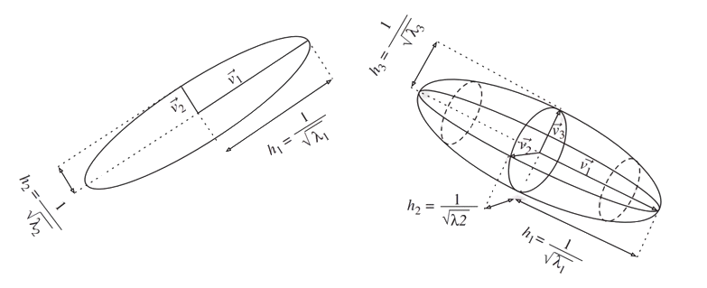
3.2 Definition : Euclidean metric space
A Euclidean metric space is a vector space equipped with a specific inner product \( <.,.>_{\mathcal{M}} \) defined by a metric tensor \( \mathcal{M} \). It is denoted by \( ( \mathbb{R}^n, \mathcal{M} ) \).
The distance between two points \( \textbf{p} \) and \( \textbf{q} \) is given by :
\[ d_{ \mathcal{M} }( \textbf{p},\textbf{q} ) = \sqrt{ \textbf{pq}^{t} \mathcal{M} \textbf{pq} } \]
Finally, the length of a segment \( \textbf{pq} \)is the distance between its endpoints :
\[ \mathcal{L}_ { \mathcal{M} } ( \textbf{pq} ) = d_{ \mathcal{M} } ( \textbf{p},\textbf{q} ) \]
It is then possible to define volumes and angles within a Euclidean metric space.
Let \(K\) be a bounded subset of \( \mathbb{R}^n \), the volume of an element \(K\) in the metric \( \mathcal{M} \) is defined as :
\[ |K| _{ \mathcal{M} } = \int _{K} \sqrt{det( \mathcal{M} )} |K| _{ \mathbb{I} _{n}} \]
The angle between two vectors \( \textbf{u} \) and \( \textbf{v} \) is defined by the unique real number \( \theta \in [ 0 , \pi ] \) such that:
\[ cos(\theta) = \frac{ <\textbf{u} , \textbf{v} > _{\mathcal{M}} }{||\textbf{u}|| _{\mathcal{M}} ||\textbf{v}|| _{\mathcal{M}}} \]
3.2.1 Remark
If the metric defining the inner product is the identity matrix, \( \mathcal{M} = \mathbb{I} _{n} \), we obtain the standard Euclidean space \( ( \mathbb{R}^n , \mathbb{I} _{n} ) \) equipped with the canonical inner product. \
3.3 Definition : Riemannian metric space
A Riemannian metric space is a continuous manifold \( \Omega \subset \mathbb{R}^n \) equipped with a smooth metric field \( \mathcal{M}(.) \), denoted by\( \mathcal{M}(\textbf{x}) _{x \in \Omega} \).
Unlike the Euclidean metric space, the distance between two points representing the shortest path is no longer a straight line but is instead given by a geodesic. However, in the context of mesh generation and adaptation, we are generally not concerned with the geodesic distance between two points, but rather with the length of a path defined by a mesh edge.
Specifically, in a Riemannian metric space \( \mathcal{M}(\textbf{x}) _{x \in \Omega} \), the length of an edge \( \textbf{pq} \) is calculated using the straight-line parametrization \( \gamma(t) = \textbf{p} + t \textbf{ pq}, \text{ }t \in [0,1] \) :
\[ \mathcal{L}_ { \mathcal{M} } ( \textbf{pq} ) = \int_{0}^{1} || \gamma (t) || \ dt = \int_{0}^{1} \sqrt{\textbf{pq}^t \mathcal{ M }( \textbf{p}+t\textbf{pq} )\textbf{pq}} \ dt \]
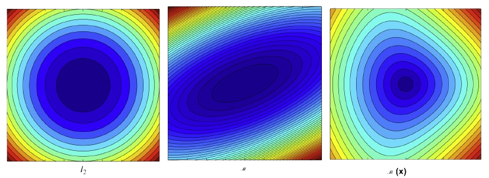
Left: standard Euclidean space \\( ([-1,1]*[-1,1], \mathbb{I} _{2} ) \\)
Middle: Euclidean metric space \\( ([-1,1]*[-1,1], \mathcal{M} ) \\)
Right: Riemannian metric space \\( (\mathcal{M}(x))_{x \in [-1,1]^2} \\)
Given an element \( K \) of \(\Omega \in \mathcal{R}^d\), the volume of \( K \) computed with respect to a Riemmanian Metric Space \((\Omega,\mathcal{M}(x))\) is : \[|K|_ {\mathcal{M}} = \int_{}^{} \sqrt{det \mathcal{M}(x) } \ dx\]
3.3.1 Riemmanian metric space decomposition and properties
A Riemannian space \(\mathcal{M} = (\mathcal{M})(x)_{x \in \Omega} \) can be written locally as :
\[ \forall x \in \Omega \mathcal{M} = d^{\frac{2}{3}}(x) \mathcal{R}(x) \begin{bmatrix}r^{-\frac{2}{3}}(x)&&\\ & r^{-\frac{2}{3}}(x) & \\ & & r^{-\frac{2}{3}}(x) \end{bmatrix} ^t\mathcal{R}(x) \]
where :
- The density \( d \) is defined as: \(d = (\lambda_1 \lambda_2 \lambda_3)^{\frac{1}{2}} = (h_1 h_2 h_3)^{-1}\), where \(\lambda_i\) are the eigenvalues of \(\mathcal{M}\).
- The anisotropy quotients \(r_i\) are defined as : \(r_i = \frac{h_i^3}{h_1 h_2 h_3}\) .
- \(R\) is the eigenvector matrix of \(\mathcal{M}\) representing the orientation.
The metric tensor \(\mathcal{M}\) can thus be decomposed into three distinct components that drive the adaptation process:
Density \(d \) Controls only the local precision level of \(\mathcal{M}\). Increasing or decreasing \(d \) affects neither the anisotropic properties nor the orientation.
Anisotropy is defined by the anisotropy quotients \(r_i \) based on the size ratios \( (h_i)\).
Orientation is represented by the eigenvector matrix \( \mathcal{R} \) of \( \mathcal{M} \) .
3.3.2 Complexity
Finally, the complexity \( \mathcal{C}\) of the metric \( \mathcal{M} \) is defined by the integral of the density over the domain: \[ \mathcal{C}(\mathcal{M}) = \int_{\Omega} d(x) \ dx = \int_{\Omega} \sqrt{\det(\mathcal{M}(x))} \ dx \]
Definition 3.4 Unit Element with respect to \(\mathcal{M}\)
Let \( K \) be a simplex element in \( \Omega\) where d denotes the dimension. \(K\) is defined by its set of edges \( \mathbf{(e_i)}_{i=1,..,d(d+1)/2}\) is said to be unit with respect to a metric \( \mathcal{M} \) if the length of each of its edges is unit in this metric:
\[ \forall i= 1,…,\frac{d(d+1)}{2} \ \ \mathcal{ l_{M}}(\mathbf{e_i})= 1 \]
If all edges of \(K\) have unit length, then its volume \( \mathbf{|K|_\mathcal{M}}\) in the metric \( \mathcal{M}\) is constant and equal to:
\[ \mathbf{|K|_\mathcal{M} }= \frac{\sqrt{d+1}}{2^{d / 2}d!} \text{ and } \mathbf{|K|} _{I_d} = \frac{\sqrt{d+1}}{2^{d / 2}d!} (det(\mathcal{M})^{ -\frac{1}{2}}) \]
where \( \mathbf{|K|} _{I_d}\) denotes the Euclidean volume.
3.5 Duality Between Discrete and Continuous Entities
Let \(\mathcal{M}\) be a metric tensor, there exists an infinite, non-empty set of elements that are unit with respect to \(\mathcal{M}\).Conversely, let \(K\) be an element such that \(|K| != 0\), there exists a unique metric tensor \(\mathcal{M}\) for which this element \(K\) is unit. Proof can be find in [32]
The consequence of this proposition is that the notion of a “unit” element relative to \(\mathcal{M}\) allows for the definition of equivalence classes of discrete elements. Thus, within the framework of continuous meshing, a metric tensor \(\mathcal{M}\) is itself referred to as a continuous element. It is used to model the set of all discrete elements that are unit for \(\mathcal{M}\). This framework makes it possible for a discrete simplex mesh to be fully described by a Riemmanian metric space.
However the existence of a perfect unit mesh for a given Riemannian metric space is not guaranteed. Therefore, the concept of a unit mesh must be extended:
A discrete mesh \(\mathcal{H}\) of a domain \( \Omega \subset R^{n}\) is considered a unit mesh with respect to a Riemannian metric space \( \mathbf{M}= (\mathcal{M})(x)_{x \in \Omega} \) if all its elements are quasi-unit.
A tetrahedron \( K \) is said to be quasi-unit if:
\[ \forall i= 1,…,6, \mathcal{l_{M}}(\mathbf{e_i}) \in [\frac{1}{\sqrt{2}}, \sqrt{2}]\] and if its volume is unitary.
Consequently, the adapted mesh is uniform and isotropic in the Riemannian space, while being anisotropic in the Euclidean space.
3.5.1 Quality function
The relaxed definition of a unit mesh, which allows for quasi-unit elements, may lead to non-conforming or degenerate elements, such as those with zero volume (see [33] for examples). Consequently, controlling edge lengths alone is insufficient, the element volume must also be monitored.
The strategy employed here is to control the ratio between the sum of the squared edge lengths and the volume of the element. All geometric quantities are computed within the prescribed metric \(\mathcal{M}\). This ratio defines a quality measure \(Q_\mathcal{M}\) that evaluates the regularity of a tetrahedron \(K\) in the metric space:
\[Q_{\mathcal{M}}(K) = \frac{36\sqrt[3]{3} \cdot |K|_ {\mathcal{M}}^{\frac{2}{3}}}{\sum_{i=1}^{6} \ell_{\mathcal{M}}^2(\mathbf{e}_i)} \in [0, 1] \]
The normalization constant \( 36\sqrt[3]{3} \) is specifically chosen to ensure that \( Q_{\mathcal{M}} = 1 \) for an equilateral tetrahedron, regardless of its edge lengths, while \( Q_{\mathcal{M}} = 0 \) for any degenerate element with null volume.
Through the concept of the unit mesh, we have established a duality between the discrete mesh \( \mathcal{T}_ K \) and the Riemannian metric space \( \mathcal{M}(\mathbf{x})_ {\mathbf{x} \in \Omega} \).This duality implies that any perfectly adapted discrete element is perceived as a unit equilateral simplex within the metric space.
Consequently, in the remainder of this work, the metric field \( \mathcal{M}(\mathbf{x})_{\mathbf{x} \in \Omega} \) will be referred to as a continuous mesh.
3.5.2 Quantification of mesh anisotropy
In three dimensions, mesh anisotropy is quantified using two distinct notions: anisotropic ratios and anisotropic quotients.The derivation of these quantities for a specific element \(K\) relies on the property that there exists a unique metric tensor \( \mathcal{M}K \) (the element-implied metric) for which the element \( K \) is unit. Once \( \mathcal{M}{K} \) is computed, the anisotropic ratio and the anisotropic quotient associated with element \(K\) are defined as follows: \[\text{ratio} = \sqrt{\frac{\max_i \lambda_i}{\min_i \lambda_i}} = \frac{\max_i h_i}{\min_i h_i}\] \(\text{quo} = \frac{\max_i h_i^3}{h_1 h_2 h_3}\) where \((\lambda_i)_{i=1,3}\) are the eigenvalues of \( \mathcal{M}K \) and \((h_i){i=1,3}\) are the corresponding characteristic sizes (\(h_i = \lambda_i^{-1/2}\)).
3.6 Metric Interpolation
In practical CFD applications, such as with the CODA solver, the physical information used for adaptation is computed and stored at discrete location, in our case, it is stored at cell center. To be able to compute a metric at any point of the domain, a robust interpolation framework on metrics is required.\ For instance we want the interpolation to be commutative (i.e. the resulting metric does not depend on the order of the interpolation operations between metrics). To that end, we use the log-Euclidean framework introduced in [5].
3.6.1 Log-Euclidean Framework
The metric logarithm is defined for a tensor \(\mathcal{M} = \mathcal{R} \Lambda \mathcal{R}^T\) as: $$\ln(\mathcal{M}) := \mathcal{R} \ln(\Lambda) \mathcal{R}^T$$ where \(\ln(\Lambda) = \text{diag}(\ln(\lambda_i))\). Additionnaly , for any symmetric matrix \(\mathbf{S} = \mathbf{Q} \Sigma \mathbf{Q}^T\), the matrix exponential is given by:$$\exp(\mathbf{S}) := \mathbf{Q} \exp(\Sigma) \mathbf{Q}^T$$ where \(\exp(\Sigma) = \text{diag}(\exp(\xi_i))\). Based on these operators, we define the logarithmic addition (\(\oplus\)) and scalar multiplication (\(\odot)\):$$\mathcal{M}_1 \oplus \mathcal{M}_2 := \exp(\ln(\mathcal{M}_1) + \ln(\mathcal{M}_2))$$ $$\alpha \odot \mathcal{M} := \exp(\alpha \cdot \ln(\mathcal{M})) = \mathcal{M}^\alpha$$ This framework ensures commutativity and preserves the structural properties of the tensors during interpolation.
3.6.2 Metric Interpolation in the Log-Euclidean Framework
Let \( (x_i)_ {i=1,…,k} \in \Omega \) be a set of cell centers and \(\mathcal{M}(c_i)_ {i=1,..,k}\) their associated metrics. Then, for a point x of \(\Omega \) such that : \[ x = \sum_{i=1}^k \alpha_i x_i \text{ with } \sum_{i=1}^k \alpha_i = 1 \]
The interpolated metric is defined by :
\[ \mathcal{M}(\mathbf{x}) = \bigoplus_{i=1}^{k} \alpha_i \odot \mathcal{M}(\mathbf{x}_ i) = \exp \left( \sum_{i=1}^{k} \alpha_i \ln(\mathcal{M}(\mathbf{x}_i)) \right) \]
While this interpolation method is commutative, its main drawback lies in its computational cost, as it requires $k$ diagonalizations along with the evaluation of matrix logarithms and exponentials. Despite being CPU-intensive, this procedure is essential for defining a continuous metric field across the entire domain. \
An additional advantage of this framework, as demonstrated in [5], is that it preserves the maximum principle. Specifically, for an edge \(ab\) with endpoint metrics \(\mathcal{M}(a)\) and \(\mathcal{M}(b)\) such that \(\det(\mathcal{M}(a)) < \det(\mathcal{M}(b)) \), the determinant of the interpolated metric remains strictly bounded: $$\det(\mathcal{M}(a)) < \det(\mathcal{M}(a + t\vec{ab})) < \det(\mathcal{M}(b)), \quad \forall t \in [0, 1]$$
3.6.3 Numerical Computation of Edge Lengths
The Riemannian length of a segment \(\mathbf{ab}\) is defined by the integral of the metric along the path. While this can be approximated using a \(k\)-point Gaussian quadrature: $$\ell_{\mathcal{M}}(\mathbf{ab}) = \int_{0}^{1} \sqrt{\mathbf{ab}^T \mathcal{M}(\mathbf{a} + t\mathbf{ab}) \mathbf{ab}} , dt \approx \sum_{i=1}^{k} \omega_i \sqrt{\mathbf{ab}^T \mathcal{M}(\mathbf{a} + \alpha_i \mathbf{ab}) \mathbf{ab}}$$ such computations are too expensive for frequent use in the remeshing process.
By assuming a logarithmic variation law along the edge, an analytical solution can be derived. Let \(\ell_1\) and \(\ell_2\) be the lengths of edge \(\mathbf{e}\) evaluated using the endpoint metrics \(\mathcal{M}(\mathbf{p}_ 1)\) and \( \mathcal{M}(\mathbf{p}_ 2) \), with \(\ell_1 > \ell_2 \). Setting \(a = \ell_1 / \ell_2\), the integrated Riemannian length is: $$\ell_{\mathcal{M}}(\mathbf{e}) = \ell_1 \frac{a - 1}{a \ln(a)}$$ The proof can be found in [32].
3.6.4 Numerical Computation of Volumes
The volume of a tetrahedron \(K\) in a Riemannian space is calculated by integrating the metric density \(\sqrt{\det \mathcal{M}(\mathbf{x})}\). Using a first-order log-Euclidean approximation at the barycenter, the volume is estimated as: \[ |K|_ {\mathcal{M}} \approx \sqrt{\det \left( \exp \left( \frac{1}{4} \sum_{i=1}^{4} \ln(\mathcal{M}_ i) \right) \right)} |K|_{\mathcal{I}_d} \]
For higher accuracy, a \(k\) -point Gaussian quadrature with weights \(\omega_j\) and barycentric coordinates \(\beta_{j}^{i}\) can be employed: \[|K|_ {\mathcal{M}} \approx |K|_ {\mathcal{I}_ d} \sum_{j=1}^{k} \omega_j \sqrt{\det \left( \exp \left( \sum_{i=1}^{4} \beta_{j}^{i} \ln(\mathcal{M}_i) \right) \right)}\]
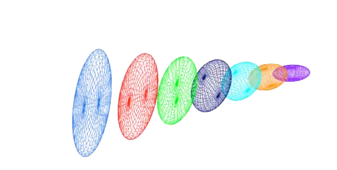
3.7 Metric Operations
Constructing a metric suitable for remeshing often requires combining information from various sources or imposing specific constraints, such as minimum/maximum edge lengths or controlled metric gradation across the mesh. Therefore, it is essential to define the mathematical operations that can be performed on metrics.
3.7.1 Metric Intersection :
Given two metric \( \mathcal{M}_ 1 \) and \( \mathcal{M}_ 2 \), their intersection \( \mathcal{M}_ {1 \cap 2}\) corresponds to a metric that imposes the largest sizes in all directions that remain smaller than those prescribed by both \(\mathcal M_1\) and \(\mathcal M_2\). Geometrically, the ellipse associated with the intersection metric \( \mathcal{M}_ {1 \cap 2}\) is the largest ellipse contained within the intersection of the ellipses of\( \mathcal{M}_ 1 \) and \( \mathcal{M}_ 2 \). This ellipsoid (metric) verifying this property is obtained by using the simultaneous reudction of the two metrics.
Simultaneous reduction
The simultaneous reudction enables to find a common basis \( (e_1, e_2, e_3) \) such that \( \mathcal{M}_1\) and \( \mathcal{M}_2\) are congruent to a diagonal matrix in this basis, and then to deduce the intersected metric. To do so, the matrix \( \mathcal{N} = \mathcal{M}_1^{-1}\mathcal{M}_2\) is introduced. \(N\) is diagonalizable with real-eigenvalues. The normalized eigenvectors of \(\mathcal{N}\) denoted by \( (e_1, e_2, e_3) \) constitute a common diagonalization basis for \( \mathcal{M}_1\) and \( \mathcal{M}_2\). The entries of the diagonal matrices, that are associated with the metrics \( \mathcal{M}_1\) and \( \mathcal{M}_2\) in this basis, are obtained with the Rayleigh formula :
\[\lambda_i = e_i^T \mathcal{M}_1 e_i \text{ and } \mu_i = e_i^T \mathcal{M}_2 e_i\]
Let \(P(e_1, e_2, e_3) \) be the matrix with the columns that are the eignevectors \({e_i}_{i=1,…,3}\) of \(\mathcal{N}\). \(P\) is invertible as \((e_1, e_2, e_3)\) is a basis of \(\mathbb{R}^3\). We have :
\[ \mathcal{M}_1 = P^{-T} \begin{bmatrix} \lambda_1&&\\ &\lambda_2& \\ &&\lambda_3 \end{bmatrix} P^{-1} \text{and} \mathcal{M}_2 = P^{-T} \begin{bmatrix} \mu_1&&\\ &\mu_2& \\ &&\mu_3 \end{bmatrix} P^{-1} \]
Since the eigen values are the opposite of the prescribed sizes, it comes : \[ \mathcal M_{1 \cap 2} = \mathcal{M}_1 \cap \mathcal{M}_2 = P^{-T} \begin{bmatrix} max(\mu_1,\lambda_1)&&\\ & max(\mu_2,\lambda_2)& \\ &&max(\mu_3,\lambda_3) \end{bmatrix} P^{-1} \]
Numerically, to compute \(\mathcal M_{1 \cap 2}\), the real-eigenvalues of \(\mathcal{N}\) are first evaluated with a Newton algorithm. Then, the eigenvectors of \(\mathcal{N}\) , which define \(P\), are computed using the algebra notions of image and kernel spaces.
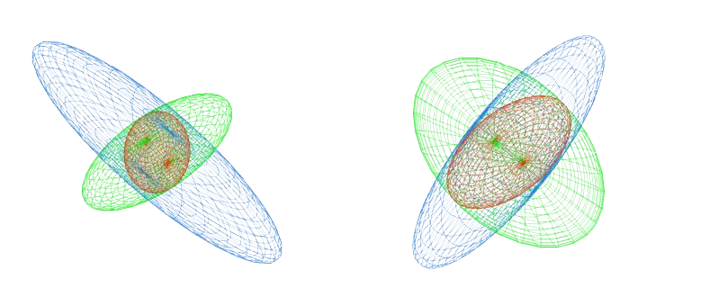
3.7.2 Metric Gradation
Metric fields may have huge variations or may be quite irregular when evaluated from numerical solutions that present discontinuities or steep gradients. This makes the generation of a unit mesh difficult or impossible, thus leading to poor quality anisotropic meshes. Generating high-quality anisotropic meshes requires to smooth the metric field by bounding its variations in all directions. It also helps flow solver convergence. In the anisotropic context, the mesh gradation consists in reducing in all directions the size prescribed at any points if the variation of the metric field is larger than a fixed threshold [1].
Spanning a metric field
Let \(p\) be a point of a domain \(\Omega\) supplied with a metric \(\mathcal{M}_p\) and \(\beta\) the specified gradation. Two laws governing the metric growth in the domain are proposed. In the first one, the metric growth is homogeneous in the Euclidean metric field defined by \(\mathcal{M}_p\). The second metric growth is homogeneous in the physical space, i.e., the classical Euclidean space.
The first law associates for any point \(x\) of the domain a unique scale factor with the metric given by: $$\eta^2(px) = (1 + \ell_p(px) \cdot \ln(\beta))^{-2} = \left(1 + \sqrt{px^{\top} \mathcal{M}_p px} \cdot \ln(\beta)\right)^{-2}$$
With this formulation, each pointwise metric \(\mathcal{M}_ p\) spans a global continuous smooth metric field all over domain \(\Omega\) parametrized by the given gradation value \(\beta\):
\[(\mathcal{M}_ p(x))_ {x \in \Omega} \text{ with } \mathcal{M}_p(x) = \eta^2(px) \mathcal{M}_p\]
In this case, the resulting metric field grows homogeneously in the Euclidean metric space defined by \(\mathcal{M}_p\) as the scale factor depends on the length of segment \(px\) with respect to \(\mathcal{M}_p\).
As a result, the shape of the metric is kept unchanged while growing. This law conserves the same anisotropic ratio. For the second law, we associate independently a growth factor with each eigenvalue of :
\[\mathcal{M}p = \mathcal{R} \Lambda \mathcal{R}^{\top} \quad \text{with} \quad \Lambda = \text{diag}(\lambda_i){i=1,3}\]
so:
\[\eta_i^2(px) = (1 + \sqrt{\lambda_i} |px|_2 \cdot \ln(\beta))^{-2} \]
The grown metric at \(x\) is given by \(\mathcal{M}_p(x) = \mathcal{R} N(px) \Lambda \mathcal{R}^{\top}\) where: \[N(px) = \begin{bmatrix} \eta_1^2(px) & 0 & 0 \\ 0 & \eta_2^2(px) & 0 \\ 0 & 0 & \eta_3^2(px) \end{bmatrix} \]
The resulting metric field grows homogeneously in the physical space. Indeed, each eigenvalue grows similarly in all directions, as the factor \(\eta_i\) depends only on the distance (in the physical space) from the original point.
Consequently, the shape, i.e., the anisotropic ratio of the metric, is no more preserved as the eigenvalues are growing separately and differently. This law gradually makes the metric more and more isotropic as it gradually propagates in the domain.In [2] the authors suggest to mix these two laws to achieve an efficient metric gradation algorithm. For this new law, a growth factor is associated independently with each eigenvalue of \(\mathcal{M}_p\): $$\eta_i^2(px) = \left( (1 + \sqrt{\lambda_i} |px|_2 \cdot \ln(\beta))^t \cdot (1 + \ell_p(px) \cdot \ln(\beta))^{1-t} \right)^{-2}$$
The authors consider \(t = 1/8\) within their numerical examples.
Metric reduction
The reduced metric at a point \(x\) of the domain \(\Omega\) is given by the strongest size constraint imposed by the metric at \(x\) and by the spanned metrics (parametrized by the given size gradation) of all the other points of the domain at \(x\): $$\hat{\mathcal{M}}(x) = \left( \bigcap_{p \in \Omega} \mathcal{M}_p(x) \right) \cap \mathcal{M}(x)$$ Practical implementation are given in [1].
3.7.3 Controlling the step between two metrics
Controlling the step between two metricsIn the remeshing process, it may be interesting to control the step between the element-implied and target metrics. Such control is available within the remesher Tucanos and specified by the parameter \(f\). Given two metric fields \(\mathcal{M}_1\) and \(\mathcal{M}_2\), the objective is to find \(\mathcal{M} = \mathcal{L}(\mathcal{M}_1, \mathcal{M}_2, f)\) as close as possible to \(\mathcal{M}_2\) such that, for all edges \(\mathbf{e}\):
\[\frac{1}{f} \leq \frac{\mathbf{e}^{\top} \mathcal{M} \mathbf{e}}{\mathbf{e}^{\top} \mathcal{M}1 \mathbf{e}} \leq f\] i.e., to have: \[ \frac{1}{f} \leq \lambda{\min}(\mathcal{M}_ 1^{-\frac{1}{2}} \mathcal{M} \mathcal{M}_ 1^{-\frac{1}{2}}) \leq \lambda_{\max}(\mathcal{M}_1^{-\frac{1}{2}} \mathcal{M} \mathcal{M}_1^{-\frac{1}{2}}) \leq f \] Practically, “as close as possible” is defined as minimizing the Frobenius norm $|\mathcal{M}_1^{-\frac{1}{2}} (\mathcal{M} - \mathcal{M}_2) \mathcal{M}_1^{-\frac{1}{2}}|_F$.The optimal $\mathcal{M}^$ is then computed as follows:Compute $\mathbf{N} := \mathcal{M}_1^{-\frac{1}{2}} \mathcal{M}_2 \mathcal{M}_1^{-\frac{1}{2}}$Compute the eigenvalue decomposition $\mathbf{Q} \mathbf{D} \mathbf{Q}^{\top} = \mathbf{N}$, with $\mathbf{D} = \text{diag}(\lambda_i)$Compute $\mathbf{N}^ := \mathbf{Q} \text{diag}(\hat{\lambda}_i) \mathbf{Q}^{\top}$ where $\hat{\lambda}_i := \min(\max(\lambda_i, \frac{1}{f}), f)$Compute $\mathcal{M}^* := \mathcal{M}_1^{\frac{1}{2}} \mathbf{N}^* \mathcal{M}_1^{\frac{1}{2}}$
A REFORMULER
4. Ansitropic Mesh Adaptation Strategy
Now that the mathematical foundations specifically the Riemannian metric framework and the discrete-continuous duality have been established, we possess the necessary tools to address the mesh adaptation problem formally. The challenge shifts from a purely geometric construction to a constrained optimization problem.
In the context of anisotropic mesh adaptation, which is specifically tailored for simplex meshes, the primary objective is to rigorously couple the physical error model to the geometrical properties of the mesh.
Let \(\mathcal{T}_ K\) be a simplex mesh composed of elements \(K\). For a given error model \(E(\mathcal{T}_ K)\), the discrete adaptation problem consists in finding the optimal mesh \(\mathcal{T}_ K^{opt}\) that minimizes the error for a fixed number of vertices \(N\) (the complexity): \[\mathcal{T}_ K^{opt} = \arg \min_{\mathcal{C}(\mathcal{T}_ K)=N} E(\mathcal{T}_ K)\] While solving this directly in the discrete space is combinatorially explosive, the continuous mesh theory provides a powerful alternative. By representing the mesh as a continuous metric field \(\mathcal{M}(\mathbf{x})\), we can recast the problem into a variational form. The goal becomes finding the optimal continuous metric \(\mathcal{M}_ {opt}\) that minimizes a continuous error functional \(\mathcal{E}(\mathcal{M})\) under a fixed complexity constraint \(\mathcal{C}(\mathcal{M}) = N\): \[\mathcal{M}_ {opt} = \arg \min_{\mathcal{C}(\mathcal{M})=N} \mathcal{E}(\mathcal{M})\]
However, we only defined the duality between discrete and continuous entities for elements and meshes but not for error models. In the following we will see how this duality is defined in literature for the linear interpolation error of a sensor w (Feature-based mesh adaptation).
4.1 Feature-based mesh adaptation
The feature-based mesh adaptation strategy is based on the multiscale error estimate [32]. It comes from the idea to control the interpolation error of sensor field \(w = f(u)\) defined from the state \(u\). Let \(\mathcal{T}_K\) be a simplex mesh on which the sensor w is piecewise linear approximated on elements \( K \). We denote the piecewise approximation by \(\Pi_hw\) on the mesh \(\mathcal{T}_K\). The idea is to solve \((65)\)Given the following \(L^p\)-norm interpolation error model of the the sensor field :
\[ E_{L^p}(\mathcal{T}_K) = (\int _{\Omega} |\omega - \Pi_h \omega |^P d\Omega)^{\frac{1}{p}} \]
To establish a rigorous link between the discrete mesh \(\mathcal{T}_h\) and the continuous metric field \(\mathcal{M}(\mathbf{x})\), we must define a continuous counterpart to the interpolation error. This is achieved by analyzing the local interpolation error of a quadratic sensor function \(w\), which represents the local Taylor expansion of a physical solution $u$ around a point \(\mathbf{a} \in \Omega\).
4.1.1 Local Error Estimate for Quadratic Forms
Let \(w(\mathbf{x}) = \frac{1}{2} \mathbf{x}^{\top} \mathbf{H} \mathbf{x}\) be a quadratic form. For a simplex element \(K\) with edges \((\mathbf{e}_i)\) and volume \(|K|\), the \(L^1\) interpolation error is bounded by the alignment of the edges with the Hessian matrix \(|\mathbf{H}|\). According to [33], this error is expressed as:
\[ | \omega - \Pi_h \omega |_ {L^1(K)} \leq \frac{|K|}{c_d} \sum_{i=1}^{n_e} \mathbf{e}_i^{\top} |\mathbf{H}| \mathbf{e}_i\]
where \(c_d\) is a constant depending on the dimension (\(c_2 = 24, c_3 = 40\)).\
To handle hyperbolic functions, the absolute value of the Hessian \(|\mathbf{H}|\) is used, effectively treating the error as an over-estimation by transforming the local model into an elliptic or parabolic one.
We now consider a metric \( \mathcal{M} \) for which \(K\) is unit, and an interpolation error on a quadratic elliptic or parabolic function \(w\) (if \(w\) is hyperbolic, we take \(|H|\) to define the discrete interpolation error). using the geometric invariants in 3.2.1 and the proposition above we have the following link (theorem) between the linear interpolation error and the metric \( \mathcal{M} \) for quadratic functions:
In 2D: \[ |w - \Pi_h w|_ {L^1(K)} = \frac{\sqrt{3}}{64} \det(\mathcal{M}^{-\frac{1}{2}}) \text{Tr}(\mathcal{M}^{-\frac{1}{2}} |\mathbf{H}| \mathcal{M}^ {-\frac{1}{2}})\] In 3D: $$|w - \Pi_h w|_{L^1(K)} = \frac{\sqrt{2}}{240} \det(\mathcal{M}^{-\frac{1}{2}}) \text{Tr}(\mathcal{M}^{-\frac{1}{2}} |\mathbf{H}| \mathcal{M}^{-\frac{1}{2}})$$
This theorem confirms that the use of metric-based mesh adaptation is particularly well suited to control anisotropically the interpolation error, because the metric alone contains enough information to describe completely the linear interpolation error. The complete proof of theorem this can be found in [33].
4.1.2 Continuous linear interpolate
The main difficulty in defining the continuous linear interpolate is to connect a discrete error computed on an element to a local continuous error that is defined pointwise. Suppose now that the continuous mesh \(\mathcal{M}(x)_ {x \in \Omega}\) is varying and \(w\) is not quadratic but only twice differentiable (to define its Hessian \(H_w\)). The equality 70 do not apply anymore but the right hand-side terms are defined continuously. The definition of a continuous linear interpolate \(\pi_{\mathcal{M}}\) follows this consideration.We denote by \(w_Q\) the quadratic approximation of a smooth function \(w\). At point \(a, w_Q\) is defined in the vicinity of \(a\) as the truncated second order Taylor expansion of \(w\): \[ \forall x \in \mathcal{V}(a), w_Q(a, x) = w(a) + \nabla w(a)(x - a) + \frac{1}{2}(x - a)^{\top}H_w(a)(x - a) \]
\(w_Q\) is a complete quadratic form composed of a constant term, a linear term, and finally a quadratic term. In the vicinity of \(a,w_Q\) approximates \(w\) and \(\mathcal{M}(x)_ {x \in \Omega}\) reduces to \(\mathcal{M}(a)\) in the tangent space.
Given the following hypothesis, (theorem) there exists a unique continuous linear interpolate function \(\pi_{\mathcal{M}}\) such that
$$\forall a \in \Omega, |w - \pi_{\mathcal{M}}w|(a) = 2\frac{|w_Q - \Pi_h w_Q|_ {L^1(K)}}{|K|} \quad (71)$$
for every \(K\) unit element with respect to \(\mathcal{M}(a)\). The proof of this theorem can be found in [33]. The consequence of this theorem allows to write the continuous linear interpolation error w.r.t only the geometry and the Hessian:
$$\forall a \in \Omega, |w - \pi_{\mathcal{M}}w|(a) = \frac{1}{8} \text{tr}(\mathcal{M}(a)^{-\frac{1}{2}} |H(a)| \mathcal{M}(a)^{-\frac{1}{2}}) \text{ in 2D} \quad (72)$$
$$\forall a \in \Omega, |w - \pi_{\mathcal{M}}w|(a) = \frac{1}{10} \text{tr}(\mathcal{M}(a)^{-\frac{1}{2}} |H(a)| \mathcal{M}(a)^{-\frac{1}{2}}) \text{ in 3D} \quad (73)$$
The proof of this is obtained by combining the above theorem 71, the equality 70 and the geometric invariants from 3.2.1.
4.1.3 Continuous linear interpolation error model
The continuous linear interpolation model in \(L^p\)-norm is given by the following: $$\mathcal{E}_ {L^p}(\mathcal{M}) = \left( \int_{\Omega} |w - \pi_{\mathcal{M}} w|^p d\Omega \right)^{\frac{1}{p}} \quad (74)$$ We can express the error only with \(\mathcal{M}(x)_ {x \in \Omega}\) and \(H_w\) the Hessian of \(w\). Putting this error model expression into problem (66) allows for a direct computation of \(\mathcal{M}_ {L^p}^{opt}\) that takes the following form: $$\mathcal{M}_ {L^p}^{opt} = N^{\frac{2}{d}} \left( \int_{\Omega} \det |H_w|^{\frac{p}{2p+d}} d\Omega \right)^{-\frac{2}{d}} \det |H_w|^{-\frac{1}{2p+d}} |H_w| \quad (75)$$ where \(d\) denotes the dimension. The proof of this is in [34].
4.2 Goal-oriented mesh adaptation
Feature-based mesh adaptation is efficient in controlling the interpolation error of a sensor field and has the good property of being generic. The multiscale error estimate in \(L^p\)-norm allows to automatically capture all scales within the flow. However, if generecity is a good advantage, it also has some flaws.
Indeed, the precision of a PDE solution is not always well described by the interpolation error. This can result in precision error in the computation of a function \(J(u)\) depending on the state \(u\) ([32],[2]). In aerodynamics, the accuracy of the aerodynamic coefficients is of interest for industrials. For example, it has been seen on wing profiles ([2]) that a mesh adaptation strategy based on the precise computation of the Drag enriched the boundary layer earlier and put less elements in the wake compared to Feature-
based mesh adaptation on the mach number. This lead to a faster convergence of the drag coefficient, however it does not guarantee that all functions are well computed on the adapted mesh.
4.3 Iterative Procedure and Convergence
Given an input discrete metric field ***, the goal of the remeshing algorithm is to perform operations on the current mesh to inforce as best as possible the desired metric. This comes in an iterative process called a mesh adaptation loop (see figure 10) in which a series of steady state solution computations, error analysis and remeshing are performed at constant complexity until mesh convergence is achieved. In practice, we apply this loop until aerodynamic coefficients reach a plateau. Then the complexity increase is specified by the user in the form of table 1 where complexity and iteration number at constant complexity are specified. Exit loop conditions could be added in the latter similar to [2] where a Cauchy convergence criterion with an error threshold \(\epsilon\) on the aerodynamic coefficients is used to get to higher complexities. Practically, the remesher works as follows: the metric is interpolated [5] on the vertexes of the mesh. Then the definition of metric lengths is possible between two vertexes with 60. Following that, local operations are performed on mesh entities within cavities (list of geometrical entities containing the entity). Different local operators exists such as edge splits, edge collapses, edge swaps, face swaps, vertex smoothing etc [30]. The idea of cavity operators is to replace an existing set of elements by a new one that conserves mesh topology (for example there is no face F counted twice). Depending on the operation, each local operator is performed if it prescribes the new metric (i.e. if the lenghts in the cavity are quasi-unit) with quality sufficient elements. The quality threshold is usually hard-coded, however it is possible to change the quality thresholds in Tucanos. The scheduling of such operators is performed as in P.C. Caplan’PhD [14] p58. To our knowledge this scheduling is different from the one present in classic anisotropic remeshers such as MMG [20], fefloa [30] or refine [37].
Since mesh adaptation is intrinsically non-linear, its resolution relies on an iterative loop aimed at the convergence of the mesh-solution pair. The process follows a rigorous sequence:
Flow resolution on a given mesh \(H_i\). Estimation of the optimal metric \(M_{L^p}\)from the computed solution (generally via Hessian recovery). Metric field gradation to ensure geometric regularity (smoothing). Modification of \(H_i\) in order to get a new mesh \(H_{i+1}\) that adheres to the prescribed metric.
This strategy not only allows for the capture of singularities and strong discontinuities (shocks, boundary layers) but also ensures the recovery of the numerical scheme’s theoretical convergence order, which is often degraded on non-adapted meshes.
the transformation of the actual mesh \(H_i\) in a adapted mesh \(H_{i+1}\) that respect the prescribed metric itself extracted from the interpoaltion error analysis is performed threw a combination of different mesh operations.
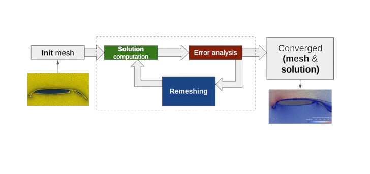
4.3.1 Cavity
Given a mesh entity \( e \) (a vertex or an edge in this case), the cavity \( \mathcal{C}(e) \)is the set of mesh elements that contain the entity \( e \).
A cavity \( \mathcal{C}(e) \) can be “re-filled” from a vertex \( \mathbf v \) as the set of elements created from \( \mathbf v \) and the faces of the cavity boundary \( \partial \mathcal{C}(e) \) (outward-oriented).
\[ \mathcal F(\mathbf v,C(e))= { K=(\mathbf v, \mathbf g_1, \cdots, \mathbf g_d) | g = (\mathbf g_1, \cdots, \mathbf g_d) \in \partial C(e), \mathbf v \notin g} \]
Input: Initial mesh and solution \((H_0, S_0^0)\), target complexity \(N\)
Output: Adapted mesh and solution
-
Compute solution \\(S_i\\) using the flow solver from \\( (H_i, S_i^0) \\)
If \\(i = n_{\text{adap}}\\) , break
Compute metric \\(M_{L^p,i} \text{from} (H_i, S_i)\\)
Apply metric gradation to obtain \\(\tilde{M}_{L^p,i}\\)
Generate adapted mesh \\(H_{i+1}\\)from \\((H_i, \tilde{M}_{L^p,i})\\)
Interpolate solution to obtain \\(S_{i+1}^0\\) from \\((H_{i+1}, H_i, S_i)\\)
4.3.2 Swap
The swap operation aims at improving the quality of the elements. It locally modifies the connectivity of a mesh without adding or removing vertices.
This operation may fail for several reasons. It is topologically impossible if the edge to be modified has only one adjacent element or if it lies on a fixed boundary. Similarly, the operation fails if the vertex topology is incompatible.
These 3 criteria have to be assessed to determine if a swap operation is accepted or not.
The swap of edge \(e_ {i,j}\) can be performed as follow
- build the edge cavity \(C(e_{i,j})\)
- compute \(q_{min} = \min_{K \in C(e_{i,j})} q(K)\)
- if \(q_{min}\) is too low, loop over all the vertices \(\mathbf{x}\) on the boundary of C (that are neither \(\mathbf{x}_i\) nor \(\mathbf{x}_j\))
- fill the vertex cavity from \(\mathbf{x} : F = \mathcal{F} (\mathbf{x},C(\mathbf e_{i,j}))\)
- if \(F\) passes all the criteria, it is a valid candidate
- if valid candidates are available, let \(F_0\) be the best one (the one with for which the minimum element quality is maximum)
- remove all the elements from \(C(\mathbf{e}_{i,j})\) from the mesh
- insert all the elements from \(F_0\) to the mesh
It can however introduce:
-
“long” or “short” edges
-
a poor representation of the geometry that will be difficult to recover later
-
inconsistent tagging
4.3.3 Split
The split operation aims at splitting “long” edges. It is applied to edges whose length (in metric space) is larger than \(l_0 > \sqrt{2}\).
The split of edge \(e_ {i,j}\) can be performed as follow :
- build the edge cavity \(C(e_{i,j})\)
- create the midpoint \(\mathbf x = (\mathbf x_i + \mathbf x_j) / 2\), project it onto the geometry if needed, and compute the metric \(\mathcal M = \exp((\log(\mathcal{M}_i) + \log(\mathcal M_j)) / 2)\)
- fill the vertex cavity from \(\mathbf{x} : F = \mathcal{F} (\mathbf{x} ,C(\mathbf{e}_{i,j}))\)
- if \(F\) passes all the criteria for swaps
- remove all the elements from \(C(\mathbf e_{i,j})\) from the mesh
- insert verted \(\mathbf{x}\) (with metric \(\mathcal{M}\)) to the mesh
- insert all the elements from \(F\) to the mesh
It can however introduce
- “short” edges
- element of low quality (including invalid elements)
These 2 criteria have to be assessed to determine if a split operation is accepted or not When introducing new vertices on boundaries, a projection step is required to ensure the consistency with the CAD model.
4.3.4 Collapse
The collapse operation aims at removing “small” edges. It is applied to edges whose length (in metric space) is smaller than \( l_0 < 1/\sqrt{2} \).
It can however introduce
- “long” edges
- element of low quality (including invalid elements)
- a poor representation of the geometry that will be difficult to recovered later
These 3 criteria have to be assessed to determine if a collapse operation is accepted or not.
The collapse of edge $e_{i,j} = (\mathbf x_i, \mathbf x_j)$ can be performed as follow
- check the tags
- if $dim(e_{i,j}) > dim(\mathbf x_i)$ and $dim(e_{i,j}) > dim(\mathbf x_j)$, do not collapse
- if $dim(e_{i,j}) > dim(\mathbf x_i)$ and $dim(e_{i,j}) = dim(\mathbf x_j)$, swap indices $i$ and $j$
- build the vertex cavity $C(\mathbf x_i)$
- fill the vertex cavity from $\mathbf x_j$: $F = \mathcal F(\mathbf x_j,C(\mathbf x_i))$
- if $F$ passes all the criteria for swaps
- remove all the elements from $C(\mathbf x_i)$ from the mesh
- insert all the elements from $F$ to the mesh
Definition: Smooth
The smoothing operation aims at improving the quality of the elements by moving vertices to some average of the locations of its neighbors.
In order to have a consistent smoothing on the boundaries of the computational domain, only the neighbors tagged on the same topological entity (or one of its children) are considered for smoothing. A projection step is still required for boundary vertices to ensure consistency with the CAD model.
The smoothnig of vertex $\mathbf x_{i}$ can be performed as follow
- build the vertex cavity $C(\mathbf x_{i})$
- compute $q_{min} = \min_{K \in C(\mathbf x_{i})} q(K)$
- compute the subset of the vertices in $C(\mathbf x_{i})$ that are tagged in the same entity as $\mathbf x_{i}$ or one of its children, and average the positions of these vertices to obtain the new position $\mathbf x$
- if $\mathbf x_{i}$ is on a boundary, project $\mathbf x$ on the geometry
- fill the vertex cavity from $\mathbf x$: $F = \mathcal F(\mathbf x,C(\mathbf x_{i}))$
- if $\min_{K \in F} q(K) < q_{min}$:
- locate the element of $C(\mathbf x_{i})$ that contains $\mathbf x$ (or is the closest), and interpolate the metric in $\mathbf x$ using the barycentric coordinates
- update the location and metric of vertex $i$
5. Tucanos Remeshing Library
Tucanos is a remeshing library developped by Xavier Garnaud and Jérome Robert in the CRT (Research and technology center) of Airbus. It contains isotropic and anisotropic 2D and 3D remeshers, optima28 metric computation in the sense of the Lp multiscale error estimate and onboard hessian computations. The main core is written in RUST with a python API available called pytucanos. It is open-source and available on git https://github.com/tucanos along with some benchmarks and documentation. It enables parallel multithreading remeshing using Rayon and metis for partitionning the mesh. The theoretical aspects follow P.C. Caplan’s PhD [14], which is based on the continuous mesh theory ([33],[34]).
5.1 Tucanos Parameters
….
While the formulation of the optimal metric \(\mathcal{M}_ {L^p}^{opt}\) provides a theoretical definition of the ideal mesh for minimizing interpolation error, its implementation on complex aerodynamic configurations quickly encounters hardware limitations.
Indeed, high-fidelity CFD simulations, coupled with an anisotropic adaptation process generating millions of elements, induce memory loads and computational times that are prohibitive for classical sequential architectures.Consequently, to maintain turnaround times compatible with industrial requirements, it becomes imperative to leverage the power of High-Performance Computing (HPC).
This transition from sequential to distributed computing introduces a major challenge: the partitioning of the computational domain into multiple sub-domains. This necessitates the definition of robust partitioning strategies capable of equitably distributing mesh complexity while minimizing the communication costs between processors.
6. Parallel Strategies
The massive data scales inherent to high-fidelity CFD and the demand for High-Performance Computing (HPC) necessitate the distribution of the computational workload across multiple processing units. Consequently, it is imperative to partition the underlying mesh of the spatial domain \( \Omega \). Partitioning decomposes the global domain into \( n \) sub-domains, effectively transforming the initial problem into \( n \) smaller, coupled sub-problems that can be solved in parallel.An efficient partitioning strategy must satisfy three primary criteria:
-
Interdependency Reduction: Minimizing the number of shared edges or faces between sub-domains to reduce costly inter-processor communication overhead.
-
Quality Preservation: Ensuring that the partitioning process does not degrade the geometric or topological quality of the individual sub-meshes.
-
Load Balancing: Uniformly distributing the computational effort among all processors to prevent bottlenecks and maximize parallel speedup.
6.1 Partitioning for Remeshing: The Interface Challenge
In the context of mesh adaptation, managing the interfaces between partitions presents a significant challenge. These boundaries must be adapted without compromising the global continuity of the mesh or parallel efficiency. Two distinct methodologies are commonly employed:
6.1.1 The Two-Step Process
This method begins with an initial domain partitioning where the resulting interfaces are “frozen,” allowing each processor to remesh its local sub-domain independently. Following this local adaptation phase, a second partitioning is performed. The key to this strategy is ensuring that the new interfaces do not coincide with the previously frozen ones. This staggered approach guarantees that the entire domain, including the initial interface regions, is eventually adapted.

6.1.2 Hierarchical Interface Freezing Method
This approach utilizes iterative, hierarchical freezing. After the initial sub-domains are remeshed with frozen interfaces, the interfaces themselves are extracted and partitioned. By “freezing” the newly created sub-interfaces, the original boundary regions can be remeshed. This recursive process—freezing interfaces of interfaces—can be repeated until global conformity and satisfactory mesh resolution are achieved across all boundaries.

Regarding Tucanos, the second approach is considered.Beyond interface management strategies for parallel remeshing, the fundamental challenge of the initial decomposition of a mesh into sub-domains remains. This task is performed by partitioning algorithms, whose objectives were discussed previously. Various partitioning algorithms are available within the Tucanos library, and a comparative performance analysis will be conducted regarding the quality of the resulting partitions. A viable metric for assessing partitioning quality is the measurement of the number of shared edges or ‘edge-cut’ between partitions following the decomposition.
… Exemples de décomposition de domaine. Test cube 3D ?
6.2 Load Balancing in Parallel Mesh Adaptation
The performance of parallel remeshing is intrinsically limited by the sub-domain with the highest computational load. This workload is a complex function of the local remeshing operators (insertion, collapse, swap, smoothing), the target metric \(\mathcal{M}_ T\), and the initial induced metric \(\mathcal{M}_{\mathcal{H}}\).
An effective domain partitioning strategy should indeed balance the work which is going to be done by the local remesher on each partition, knowing that each partition is meshed independently.
It is convenient to define the work at the elements because it is the elements that are uniquely distributed to each partition. We recall that the natural metric of an element \(K\) is the unique metric tensor \(\mathcal{M}_K\) such that all edges of \(K\) are of length 1 for \(\mathcal{M}_K\) . It is obtained by solving a simple linear system [35]. And, metric field (MH (x))x∈Ω is the union of the element metrics MK. To define the remesher work per element and the total work, we use a continuous approach – similarly to the error estimate theory [35,36] – because the initial mesh and the targeted final adapted mesh are represented by their respective metric fields (MH (x))x∈Ω and (M(x))x∈Ω.
Remark
If we consider that the metric induced by the initial mesh is equal to the target metric at every point of the domain \(\Omega\), i.e., \( (\mathcal{M}_ {\mathcal{H}}(x))_{x \in \Omega} = (\mathcal{M}_T(x)) _{x \in \Omega}\), then no remeshing work is required.
Fondations Théoriques
Pour appréhender pleinement les travaux présentés dans ce document, une bonne compréhension des concepts fondamentaux de la dynamique des fluides numérique et de l’adaptation de maillage est essentielle
Une bref rappel du WorkFlow CFD :
Comme indiqué lors de l’introduction la Computational Fluid Dynamics (CFD) est une discipline clé pour la simulation de phénomènes aéronautiques complexes.
Son workflow typique comprend plusieurs étapes :
-
la formulation du problème physique en équations mathématiques ( Equations de Naviers-Stokes )
-
la discrétisation du domaine physique en un maillage “initial” pour transformer les équations continues en un système discret
-
la résolution numérique de ce système
-
L’analyse d’erreur de la solution
-
l’adaptation de ce maillage en conséquence dans le but de converger vers un maillage et une solution optimale pour le problème donné.
L’analyse d’erreur, qui succède à la résolution CFD, est le moteur de l’adaptation de maillage.
De cette analyse découle un champ de métrique, une entité qui précise comment le maillage doit être modifié pour minimiser les erreurs sur le maillage intial. Pour bien saisir ce mécanisme, il est fondamental de comprendre ce qu’est une métrique et comment elle définit un granularité spatiale. (Voir section sur les métriques : Metrics)
Une fois cette métrique cible établie, il devient nécessaire de savoir comment la traduire en actions concrètes sur le maillage. La section sur l’Adaptation de Maillage explicitera les opérations géométriques et topologiques qui transforment le maillage pour qu’il réponde aux spécifications de la métrique (voir section Mesh Adaptation)
Finalement, pour que l’ensemble de ce processus d’adaptation soit viable et performant pour les applications industrielles à grande échelle, une maîtrise du Calcul Parallèle est indispensable. On expliquera certains aspects de la discipline et on montrera de quelle manière on souhaite l’utiliser dans le cadre de la thèse. (voir section Parallel_Computing)
Adaptation de Maillage
A discrete simplex mesh can be fully described by a Riemannian metric space. Such duality relies on the notion of unit elements. Once we define the unit element notion, we can generalize the unit notion to the mesh and then define a duality between the mesh and the continuous metric space. Then we can refer to a mesh as its metric field. Furthermore we can use the existing metric operations and invariants in the Riemannian space to control the interpolation error. Such mathematical framework was thoroughly established in ([33],[34]). We will hereby recall the most important aspects of the continuous mesh theory.
To generate anisotropic meshes that adapt to the flow physics, it is necessary to prescribe element sizes and orientations at every point in the domain. This is made possible by using the Riemannian space defined earlier.
The core idea is to generate a unit mesh with respect to the metric derived from the error indicator. A tetrahedron\( K \), ddefined by its set of edges \( \mathbf{(e_i)}_{i=1..6}\)is said to be unit with respect to a metric \( \mathcal{M} \) if the length of each of its edges is unity in this metric:
\[ \forall i= 1,…,6, \mathcal{l_{M}}(\mathbf{e_i})= 1 \text{ with } \mathcal{l_{M}}(\mathbf{e_i})=\sqrt{^t\mathbf{e_i}\mathcal{M}\mathbf{e_i}} \]
If all edges of \(K\) have unit length, then its volume \( \mathbf{|K|_\mathcal{M}}\) in the metric \( \mathcal{M}\) is constant and equal to:
\[ \mathbf{|K|_\mathcal{M} }= \frac{\sqrt{2}}{12} \text{ and } \mathbf{|K|} = \frac{\sqrt{2}}{12} (det(\mathcal{M}))^{ -\frac{1}{2}} \]
where \( \mathbf{|K|}\) denotes the Euclidean volume.
The existence of a perfect unit mesh for a given Riemannian metric space is not guaranteed. Therefore, the concept of a unit mesh must be extended: a discrete mesh \(\mathcal{H}\) of a domain \( \Omega \subset R^{n}\) is considered a unit mesh with respect to a Riemannian metric space \( \mathbf{M}= (\mathcal{M})(x)_{x \in \Omega} \) if all its elements are quasi-unit. A tetrahedron \( K \) is said to be quasi-unit if:
\[ \forall i= 1,…,6, \mathcal{l_{M}}(\mathbf{e_i}) \in [\frac{1}{\sqrt{2}}, \sqrt{2}]\] and if its volume is unitary.
Consequently, the adapted mesh is uniform and isotropic in the Riemannian space, while being anisotropic in the Euclidean space.
Duality Between Discrete and Continuous Entities
Lete \(\mathcal{M}\) be a metric tensor, there exists an infinite, non-empty set of elements that are unit with respect to \(\mathcal{M}\).Conversely, let \(K\) be an element such that \(|K| != 0\), there exists a metric tensor \(\mathcal{M}\) for which this element \(K\) is unit.
The consequence of this proposition is that the notion of a “unit” element relative to \(\mathcal{M}\) allows for the definition of equivalence classes of discrete elements. Thus, within the framework of continuous meshing, a metric tensor \(\mathcal{M}\) is itself referred to as a continuous element. It is used to model the set of all discrete elements that are unit for \(\mathcal{M}\). This framework makes it possible to compute geometric quantities directly associated with this continuous element.
A Riemannian space \(\mathcal{M} = (\mathcal{M})(x)_{x \in \Omega} \) can be written locally as :
\[ \forall x \in \Omega \mathcal{M} = d^{\frac{2}{3}}(x) \mathcal{R}(x) \begin{bmatrix}r^{-\frac{2}{3}}(x)&&\\ & r^{-\frac{2}{3}}(x) & \\ & & r^{-\frac{2}{3}}(x) \end{bmatrix} ^t\mathcal{R}(x) \]
où :
- The density\( d \) is defined as: \(d = (\lambda_1 \lambda_2 \lambda_3)^{\frac{1}{2}} = (h_1 h_2 h_3)^{-1}\), where \(\lambda_i\) are the eigenvalues \(\mathcal{M}\).
- The anisotropy quotients \(r_i\) are defined as : \(r_i = \frac{h_i^3}{h_1 h_2 h_3}\) .
- \(R\) is the eigenvector matrix of \(\mathcal{M}\) representing the orientation.
The metric tensor \(\mathcal{M}\) can thus be decomposed into three distinct components that drive the adaptation process:
Density \(d \) Controls only the local precision level of \(\mathcal{M}\). Increasing or decreasing \(d \) affects neither the anisotropic properties nor the orientation.
Anisotropy is defined by the anisotropy quotients \(r_i \) based on the size ratios \( (h_i)\).
L’orientation is represented by the eigenvector matrix \( \mathcal{R} \) of \( \mathcal{M} \) .
Finally, the complexity\( \mathcal{C}\) of the metric \( \mathcal{M} \) (which corresponds to the target number of vertices \( N \) ) is defined by the integral of the density over the domain:: \[ \mathcal{C}(\mathcal{M}) = \int_{\Omega} d(x) \ dx = \int_{\Omega} \sqrt{\det(\mathcal{M}(x))} \ dx \]
Error Control and Continuous Formulation in Mesh Adaptation
In mesh adaptation, the goal is to control the interpolation error between an exact solution \( u \) and its linear reconstruction on a mesh \( \mathcal{H}\) :
\[ |u- \Pi_h u |_{L^p(\Omega_h)}\]
where :
- \(\Pi_h u\) is the linear interpolant on the discrete mesh.
- \((\Omega_h)\) is the meshed domain.
This formulation is discrete and explicitly depends on the mesh, which makes global optimization complex. By using a continuous metric field \( \mathcal{M}(x) \),one can define a continuous interpolation error associated with the metric \( \mathcal{M}(x) \)independent of any specific discrete mesh:
\[ |u- \Pi_{\mathcal{M}} u |_{L^p(\Omega_h)}\]
For a quadratic function \(u \), the following theorem holds:
Théorème 3.1.
For any element \(K\) that is unit with respect to \(\mathcal{M} \) , the \(L^1 \) interpolation error of \( u \)is independent of the element’s shape and depends solely on the Hessian \(\mathbf{H} \) of \(u \) and the metric \(\mathcal{M}\). In 3D, for all tetrahedra \(K \) that are unit with respect to \(\mathcal{M}\) , the following equality holds: :
\[|u - \Pi_h u|_{L^1(K)} = \frac{\sqrt{2}}{240} \det \left( \mathcal{M}^{-\frac{1}{2}} \right) \text{trace} \left( \mathcal{M}^{-\frac{1}{2}} \mathbf{H} \mathcal{M}^{-\frac{1}{2}} \right)\]
The error is well-defined for a quadratic solution on an element K, however, since a metric is defined at every point in the domain\( x \in \Omega \)it is necessary to define the error throughout the entire domain :
Théorème 3.2.
Let\(u\)be a twice continuously differentiable function on a domain \( \Omega \) and let \( \mathcal{M}(x)_{x \in \Omega} \) be a continuous mesh of \( \Omega\).
There exists a unique function\( \pi_M \) such that: \[ \forall a \in \Omega, |u - \pi_M u|(a) = \frac{|u_Q - \Pi_h u_Q|_{L^1(K)}}{|K|} = \frac{1}{20} \text{trace} \left( \mathcal{M}(a)^{-\frac{1}{2}} |\mathbf{H}(a)| \mathcal{M}(a)^{-\frac{1}{2}} \right) \] for any element K that is unit with respect to \(\mathcal{M}(a)\) , where \( u_Q\) is the quadratic model of \(u\) at point\( a \).
This theorem emphasizes another discrete-continuous duality by highlighting a continuous equivalent of the interpolation error.
For this reason, the following formalism is proposed
\( \pi_M\) is called the continuous linear interpolant, and \( |u - \pi_M u| \) represents the continuous dual of the interpolation error.
The local interpolation error becomes global when the mesh is unit with respect to a constant metric tensor (which does not necessarily imply that the mesh is uniform) and when the function is quadratic. In this specific case, neglecting boundary discretization errors, we obtain the following equality:
\[ |u - \Pi_h u|_{L^1(\Omega_h)} = |u - \pi_M u| _{ L^1(\Omega) }\]
for all meshes \( \mathcal{H} \) that are unit with respect to\( \mathcal{M}(x)_{x \in \Omega} \)
3.4 Optimal Control of the \(L^p\)-norm Interpolation Error
In its most general form, the mesh adaptation problem consists of finding the mesh \(\mathcal{H}\) of a domain \( \Omega \) that minimizes a given error for a defined function \( u \).
For the sake of simplicity, we consider here the linear interpolation error \( |u - \Pi_h u | \) controlled in the \(L^p\)norm, although other norms may also be used. The problem is thus posed a priori: Find \( H_{opt} \) with \(N\) vertices such that: \[E_{L^p}(H_{opt}) = \min_{H} |u - \Pi_h u|_{L^p(\Omega_h)} \quad (P)\]
Problem \((P)\) is a global combinatorial problem that proves to be insoluble in practice. Indeed, it would require the simultaneous optimization of both the mesh topology and the vertex positions.
Consequently, simpler sub-problems are considered to approximate the solution. A common simplification consists of performing a local error analysis instead of addressing the global problem. A first set of methods focuses on deducing the optimal shape of the elements. A second set involves deriving a local bound for the interpolation error.
This bound is then transformed into a metric-based estimate. Direct error minimization can also be considered by using the interpolation error itself as a cost function within the mesh generator.
All these strategies share a common trait: they solve a local problem, as they operate in the neighborhood of a single element. Consequently, such error minimizations are equivalent to a gradient descent algorithm that only converges toward a local minimum with poor convergence properties. This drawback arises from the fact that the minimization is performed directly on a discrete mesh.
3.5 Optimal Control of the \(L^p\)-norm Interpolation Error in a Continuous Framework
We propose to address the resolution of \((P)\) within a continuous framework. Consequently, \((P)\) is reformulated as a continuous optimization problem where the discrete interpolation error is replaced by its continuous equivalent:
Find \(M_{opt}\) with a complexity of \(N\) such that: \[E_{L^p}(M_{opt}) = \min_{M} |u - \pi_M u|_{L^p(\Omega)}\]
By using the definition of the continuous linear interpolant\(\pi_M\), it is possible to pose a well-posed global optimization problem to find the optimal continuous mesh that minimizes the \(L^p\) norm continuous interpolation error:
Find \(M_{L^p} = \min_{M} E_{L^p}(M)\), where:
\[E_{L^p}(M) = \left( \int_{\Omega} (u(x) - \pi_M u(x))^p , dx \right)^{1/p} = \left( \int_{\Omega} \text{trace} \left( M(x)^{-1/2} |H_u(x)| M(x)^{-1/2} \right)^p dx \right)^{1/p} \quad (4)\]
subject to the constraint: \[\mathcal{C}(M) = \int_{\Omega} d(x) \ dx = N\]
The complexity constraint is added to avoid the trivial solution where all sizes \((h_i)_{i=1,3}\) would be zero, which would result in zero error. Unlike a discrete analysis, this problem can be solved globally using the calculus of variations, which is well-defined over the space of continuous meshes.
Theorem 3.3
Let \(u\) be a twice continuously differentiable function defined on \(\Omega \subset \mathbb{R}^3\), and \(H_u\) its Hessian. The optimal continuous mesh \(M_{L^p}(u) = (M_{L^p}(x))_{x \in \Omega}\) that locally minimizes Problem (4) is given by:
\[M_{L^p}(x) = N^{\frac{2}{3}} \left( \int_{\Omega} \det(|H_u(\bar{x})|)^{\frac{p}{2p+3}} d\bar{x} \right)^{-\frac{2}{3}} \times \det(|H_u(x)|)^{-\frac{1}{2p+3}} |H_u(x)| \quad (5)\]
It satisfies the following properties:
- L’Uniqueness : \(M_{L^p}(u)\) is unique.
- Local Alignment: \(M_{L^p}(u)\) is locally aligned with the eigenvector basis of \(H_u\) and possesses the same anisotropy ratios as \(H_u\).
- Optimal Error Bound: \(M_{L^p}(u)\) provides an explicit optimal bound for the \(L^p\)norm interpolation error: :
\[ |u - \pi_{M_{L^p}} u|_ {L^p(\Omega)} = 3 N^{-\frac{2}{3}} \left( \int_{\Omega} \det(|H_u|)^{\frac{p}{2p+3}} \right)^{\frac{2p+3}{3p}}\]
It thus appears that the search for the optimal mesh cannot be dissociated from the metric from which it originates; the latter acts as the pivot between the theoretical minimization of error and the geometric construction of a discrete and efficient computational domain.
4. Mesh Adaptation for Steady Flows
The transition from a theoretical error analysis to a numerical application in Fluid Dynamics requires a reformulation of the optimization problem. While pure theory defines the optimal metric as an ideal tensor, the operational challenge lies in the effective generation of a mesh whose density and anisotropy minimize the approximation error.
In numerical simulations, the exact solution \(u\) is, by definition, unknown.
Problem \((P)\) therefore transposed to minimize the error between \(u \text{ and } u_h \) in the \( |L^{p}| \) norm .
This transition requires coupling continuous mesh theory with error estimators capable of linking the approximation error to the local interpolation error.
4.1. Adaptation Strategies
Two distinct methodological approaches are used to drive anisotropy:
Feature-based approach :This aims to optimize the mesh to capture all physical structures of a specific sensor (e.g., pressure, Mach number). The use of the \(L^p\)norm is crucial here for capturing multi-scale phenomena, allowing for the refinement of structures whose amplitude is several orders of magnitude smaller than the primary scales.
Goal-oriented approach: This focuses the error reduction effort on a specific scalar functional of interest (e.g., lift, drag), although prescribing anisotropy in this context is mathematically more complex.
4.3. Iterative Procedure and Convergence
Since mesh adaptation is intrinsically non-linear, its resolution relies on an iterative loop aimed at the convergence of the mesh-solution pair. The process follows a rigorous sequence:
Flow resolution on a given mesh \(H_i\). Estimation of the optimal metric \(M_{L^p}\)from the computed solution (generally via Hessian recovery). Metric field gradation to ensure geometric regularity (smoothing). Generation of a new mesh \(H_{i+1}\) that adheres to the prescribed metric.
This strategy not only allows for the capture of singularities and strong discontinuities (shocks, boundary layers) but also ensures the recovery of the numerical scheme’s theoretical convergence order, which is often degraded on non-adapted meshes.
We no longer seek merely to mathematically define an optimal metric, but to physically construct the resulting optimal mesh to solve complex fluid dynamics problems.
Input: Initial mesh and solution \((H_0, S_0^0)\), target complexity \(N\)
Output: Adapted mesh and solution
-
Compute solution \\(S_i\\) using the flow solver from \\( (H_i, S_i^0) \\)
If \\(i = n_{\text{adap}}\\) , break
Compute metric \\(M_{L^p,i} \text{from} (H_i, S_i)\\)
Apply metric gradation to obtain \\(\tilde{M}_{L^p,i}\\)
Generate adapted mesh \\(H_{i+1}\\)from \\((H_i, \tilde{M}_{L^p,i})\\)
Interpolate solution to obtain \\(S_{i+1}^0\\) from \\((H_{i+1}, H_i, S_i)\\)
\(\) \(\) \(\) \(\) \(\)
Definition: Cavity
Given a mesh entity \( e \) (a vertex or an edge in this case), the cavity \( \mathcal{C}(e) \)is the set of mesh elements that contain the entity \( e \).
A cavity \( \mathcal{C}(e) \) can be “re-filled” from a vertex \( \mathbf v \) as the set of elements created from \( \mathbf v \) and the faces of the cavity boundary \( \partial \mathcal{C}(e) \) (outward-oriented).
\[ \mathcal F(\mathbf v,C(e))= { K=(\mathbf v, \mathbf g_1, \cdots, \mathbf g_d) | g = (\mathbf g_1, \cdots, \mathbf g_d) \in \partial C(e), \mathbf v \notin g} \]
Definition: Swap
The swap operation aims at improving the quality of the elements. It locally modifies the connectivity of a mesh without adding or removing vertices.
This operation may fail for several reasons. It is topologically impossible if the edge to be modified has only one adjacent element or if it lies on a fixed boundary. Similarly, the operation fails if the vertex topology is incompatible.
These 3 criteria have to be assessed to determine if a swap operation is accepted or not.
This operation may fail for several reasons. It is topologically impossible if the edge to be modified has only one adjacent element or if it lies on a fixed boundary. Similarly, the operation fails if the vertex topology is incompatible.
A swap is also rejected when quality and geometric constraints are not met. The operation is not performed if the current mesh quality is already above the required threshold, or if it risks compromising surface regularity by creating, for instance, an excessively large normal angle. Specifically, the new elements resulting from the swap must respect a minimum quality and predefined edge length limits. Finally, the swap is considered a failure if the proposed modification does not change the cavity connectivit
It can however introduce:
-
“long” or “short” edges
-
a poor representation of the geometry that will be difficult to recover later
-
inconsistent tagging
These three criteria must be assessed to determine if a swap operation is accepted or not.
Definition: Split
The split operation aims at splitting “long” edges. It is applied to edges whose length (in metric space) is larger than \(l_0 > \sqrt{2}\).
For a split to be performed on an edge deemed too long, it must not be located on a fixed boundary, and the modification must not result in poor mesh quality or excessively short edges. If any of these conditions are not met, the operation fails. The operation is validated and executed only if all conditions are respected and if it effectively improves the mesh quality.
It can however introduce
- “short” edges
- element of low quality (including invalid elements)
These 2 criteria have to be assessed to determine if a split operation is accepted or not When introducing new vertices on boundaries, a projection step is required to ensure the consistency with the CAD model.
Definition: Collapse
The collapse operation aims at removing “small” edges. It is applied to edges whose length (in metric space) is smaller than \( l_0 < 1/\sqrt{2} \).
It can however introduce
- “long” edges
- element of low quality (including invalid elements)
- a poor representation of the geometry that will be difficult to recovered later
These 3 criteria have to be assessed to determine if a collapse operation is accepted or not.
Just as with a split, a collapse on an edge deemed too short can only be performed under certain conditions. The operation is first subject to feasibility checks. It fails if the edge is on a fixed boundary, if the modification risks degrading the resulting mesh quality, or if it leads to an irregular vertex geometry.
Definition: Smooth
The smoothing operation aims at improving the quality of the elements by moving vertices to some average of the locations of its neighbors.
In order to have a consistent smoothing on the boundaries of the computational domain, only the neighbors tagged on the same topological entity (or one of its children) are considered for smoothing. A projection step is still required for boundary vertices to ensure consistency with the CAD model.
Calcul Parallèle
MPI
RAYON
Environnement de travail
La mise en oeuvre des concepts théoriques de l’adaptation de maillage anisotrope dans un envrionnement de calcul massivement parallèle nécessite un écosystème précis. Cette section détaille les composants clés de notre environnement de travail. N ous y présenterons Tucanos, l’outil d’adaptation de maillage interne (développé chez Airbus par Xavier Garnaud et Jerome Robert ) qui constitute la base de nos recherches et développements, le cluster de calcul HPC,le logiciel de visualisation Paraview, la plateforme Mdbook utilisée pour cette documentation ainsi que l’équipe d’encadrement et le planning prévisionnel de la thèse.
Tucanos
Tucanos is a 2D and 3D anisotropic mesh adaptation library. It is based on the principles described in “Four-Dimensional Anisotropic Mesh Adaptation for Spacetime Numerical Simulations” by Philip Claude Caplan.
The project is enterily coded in Rust, but it also has a Python interface.
You can find more information and the source code for Tucanos on its official GitHub repository: https://github.com/tucanos/tucanos.
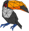
Outils Utilisés
L’environnement HPC
Mes travaux de thèse sont ancrés au sein d’un cluster de calcul haute performantce (HPC). Cet environnement possède une architecture robuste conçue pour répondre aux exigences des calculs massifs liés aux activités d’ingénierie AIRBUS. L’environnement est composé de noeuds de calcul optimisé en terme de puissance et de mémoire. La machine utilisée est composée de deux types de noeuds calcul :
| Caractéristiques \ Types | Type 1 | Type 2 |
|---|---|---|
| Processeurs | 2 Xeon-G 6142 | 2 Xeon-G 6142 |
| Coeurs physiques par processeurs | 16 (HT) | 16 (HT) |
| Base Clock Speed | 1.6 Ghz | 1.6 Ghz |
| Memory Speed | 2666 Mhz | 2666 Mhz |
| RAM | 96GB | 384 GB |
| Stockage local | 1 TB HDD | 3.8 TB SSD |
La machine comprend 110 noeuds de Type 1 et 16 de Type2.
L’ensemble du cluster est géré par LSF (Load Sharing Facility) qui alloue dynamiquement des ressources critiques en fonction des requêtes soumises.
Paraview
MdBook : Outil de Documentation et de Suivi de Thèse
Ce document lui-même est généré à l’aide de MdBook, un outil de publication de livres statiques basé sur Markdown. MdBook offre plusieurs fonctionnalités clés qui sont particulièrement pertinentes pour la documentation d’une thèse en calcul scientifique :
-
Sa syntaxe Markdown est légère et aide à se concentrer sur le contenu.
-
Il inclut un support de recherche intégré.
-
La coloration syntaxique pour les blocs de code est prise en charge pour de nombreux langages différents.
-
Des fichiers de thème permettent de personnaliser le formatage de la sortie.
-
Les préprocesseurs peuvent fournir des extensions pour une syntaxe personnalisée et modifier le contenu.
-
Les backends peuvent rendre la sortie dans plusieurs formats.
-
Écrit en Rust, MdBook est conçu pour la vitesse, la sécurité et la simplicité.
-
Il permet également le test automatisé des exemples de code Rust qui sera très utile pour certaines fonctionnalités implémentées dans Tucanos.
MdBook : https://rust-lang.github.io/mdBook/index.html.
Organisation des travaux de recherche
-
[M1-M6] Immersion dans le logiciel CODA et son environnement, incluant l’environnement de développement, les outils de pré/post-traitement et l’environnement HPC Td’Airbus. L’objectif est d’apprendre et de se former sur le logiciel CODA et de mettre en place le calcul de cas tests pertinents.
-
[M1-M6] Réalisation d’une revue de littérature sur les métriques de maillage existantes pour les applications aéronautiques, la résolution près des parois, les écoulements turbulents, les écoulements transsoniques avec chocs, et les méthodes basées sur l’objectif utilisant la sensibilité adjointe.
-
[M4-M17] L’implémentation du support de la métrique anisotrope sera réalisée dans kalpaTARU. Cela inclura l’extension du support existant de la métrique scalaire aux champs de métriques tensoriels, l’adaptation de l’interpolation de métrique distribuée existante aux champs tensoriels, et l’implémentation de critères de seuillage pour les champs tensoriels. Les tests seront effectués en utilisant l’infrastructure d’adaptation de maillage autonome existante.
-
[M7-M11] Apprentissage et formation sur l’utilisation et le développement de Tucanos afin de réaliser les développements nécessaires pour supporter l’adaptation de maillage distribuée. Cela implique le gel de l’adaptation des faces des processeurs, l’information de tag pour la gestion des indices globaux-locaux, et l’API C/Rust pour la nouvelle fonctionnalité créée.
-
[M11-M17] En Phase 1, Tucanos-kalpaTARU sera couplé via une interface en ligne de commande (CLI). Le principal travail de développement consistera à implémenter un plugin d’E/S pour les maillages CODA basé sur le plugin de maillage AVBP existant. La validation sera effectuée (adaptation de maillage statique) sur des maillages CODA simples avec des champs de métriques prescrits dans des fichiers HDF5.
-
[M17-M24] En Phase 2, nous réaliserons le couplage de la structure de données FSDM en utilisant l’interface C-API de Tucanos-kalpaTARU. Les tests et la validation seront effectués sur des cas tests avec diverses métriques prescrites implémentées dans CODA.
-
[M24-M30] Les tests et la validation seront réalisés sur un cas test de production, à savoir la configuration de train d’atterrissage LAGOON et les configurations de Drag Prediction Workshop (DPW).
-
[M30-M36] Réalisation des tâches de rédaction de thèse et communication des publications pour satisfaire aux exigences du doctorat.
Encadrement
Le succès de ce projet de thèse repose sur un encadrement solide et multidisciplinaire, bénéficiant de l’expertise combinée d’Airbus et du Centre Européen de recherche et de formation en Calcul Scientifque (CERFACS) :
-
Laraufie Romain : Encadrant principal AIRBUS
-
Xavier Garnaud : Encadrant AIRBUS
-
Jerome Robert : Encadrant AIRBUS
-
Jean-Christophe Jouhaud : Directeur de thèse CERFACS
-
Michael Rudgyard: Encadrant CERFACS
-
Jens-Dominik Mueller : Encadrant CERFACS
Recherche & Premiers Résultats
Partitionneurs
Comme nous l’avons vu, la quantité de données induites par la résolution des équations de la CFD ainsi que la recherche de calcul de haute performance nous pousse à utiliser plusieurs unité de calcul. Pour cela il est impératif de partitionner le maillage sous-jacent au domaine de travail. Partitionner permet de diviser le domaine en autant de sous-domaines qu’il y a de coeurs disponibles, décomposant le problème initial en N sous-problèmes.
Un bon partitionnement repose sur trois critères essentiels :
Reduction des interdépendances : Minimiser les arêtes ou faces partagées entre les sous-domaines afin de limiter les communications coûteuses entre les unités de calcul.
Preservation de la qualité : Assurer que la division ne dégrade pas la qualité des sous-maillages individuels
Equilibrage de charge : Distribuer équitablement la charge de travail computationnel entre tous les processeurs afin d’eviter les goulots d’étranglement et maximiser la performance parallèle (CF Load balancing)
Partitionnement pour le Remaillage : Le Défi des Interfaces
Dans le cadre du remaillage, la gestion des interfaces entre les partitions est un défi majeur, car ces frontières doivent être adaptées sans compromettre la continuité du maillage global ni l’efficacité parallèle. Deux approches principales peuvent être distinguées pour adresser ce problème
Two-Step process :
Cette méthode débute par un premier partitionnement du maillage. Les interfaces de ces partitions initiales sont alors “gelées”, permettant à chaque processeur de remailler son sous-domaine interne de manière indépendante. Une fois cette première phase d’adaptation locale achevée, un second partitionnement est effectué sur l’ensemble du domaine, mais de manière à ce que les interfaces du premier partitionnement (celles qui étaient gelées) ne partagent aucun élément en commun avec les nouvelles interfaces du deuxième partitionnement. Cette stratégie garantit que la totalité du domaine, y compris les zones d’interface initialement gelées, soit effectivement remaillée, assurant ainsi une adaptation complète.
Hierarchical Interface Freezing Method :
Cette seconde approche est également basée sur le gel des interfaces, mais de manière itérative et hiérarchique. Le domaine est initialement partitionné et les interfaces sont gelées, permettant le remaillage indépendant de chaque sous-domaine. Une fois cette étape terminée, l’attention se porte sur les interfaces elles-mêmes : elles sont à leur tour partitionnées (en “gelant” les sous-interfaces nouvellement créées), puis remaillées. Ce processus de subdivision et de remaillage des interfaces peut être répété de manière récursive (gel des interfaces des interfaces, et ainsi de suite) jusqu’à atteindre un niveau de précision et de conformité satisfaisant sur l’ensemble des frontières.
Au-delà des stratégies de gestion des interfaces pour le remaillage parallèle, la problématique fondamentale de la division initiale d’un maillage en sous-domaines demeure. Cette tâche est assurée par les algorithmes de partitionnement dont les objectifs ont été discutés plus tôt. Nous allons introduire ici une séléction des partitionneurs utilisés au sein de Tucanos, ainsi que ceux implémentés dans le cadre des travaux de thèse. On effectuera une analyse comparative de leurs performances sur un cas test :
Les deux partitionneurs ci-dessous sont basés sur une renumérotation préalable des sommets d’après une courbe de Hilbert. Chaque sommet du maillage se voit attribuer un indice de Hilbert en fonction de sa position spatiale sur la courbe. C’est une opération de compléxité linéaire, facilement parallélisable. Les partitionnements suivants se basent donc sur la liste des indices de Hilbert qui a la forme suivante :
[ Hilbert_1 = element_i, Hilbert_2 = element_j, ... ]
Considérant qu’à l’issue de chaque partitionnement, on souhaite obtenir n partitons avec un nombre d’éléments par partition très proche, sans load Balancing.
1. Hilbert Ball Partitionner
On commence par lister les éléments partageant le sommet n°1 d’après la liste d’indices de Hilbert, cette liste d’éléments appelée boule du sommet 1, chacun de ces éléments est ajouté à la partition n°1. Puis on fait de même avec le sommet n°2, on liste et on ajoute les éléments de la boule du sommet 2 qui n’ont pas encore été ajouté à une partition, et ainsi de suite … A chaque fois que l’on ajoute un élément à une partition, on vérifie que le nombre d’éléments dans la partition_i que l’on est en train de remplir n’excède pas le montant d’éléments par partition voulu. Si tel est le cas alors l’élément est ajouté à la partition_i+1.
Voici un exemple du partitionnement obtenu sur un maillage carré en 2D via la méthode de Hilbert pour n=4 partitions:
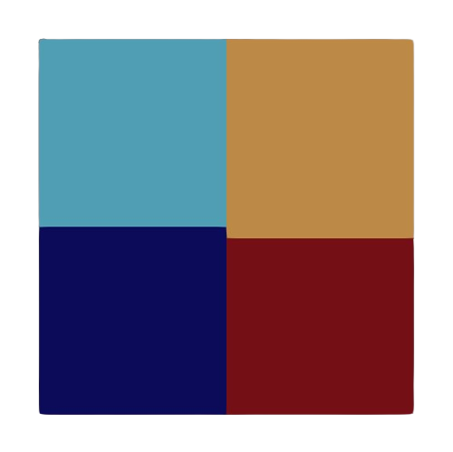
quality=2.13e-2
2. BFS
Cette méthode s’appuie non pas sur une renumérotation par Hilbert des sommets mais sur une renumérotation par éléments. On considère alors le premier élément de cette liste d’éléments, qu’on appellera élément racine, on ajoute chacun des éléments voisins à une file d’attente. Puis chaque élément de la file d’attente est ajouté à la partition courante et on ajoute également ses voisins (si ils n’ont pas déjà été assignés) à la file d’attente. La méthode avance donc par front. De la même manière que pour la méthode de la boule de Hilbert, chaque fois qu’un élément est ajouté à une partition, on s’assure que le montant d’élément dans la partition courante n’excède pas le nombre d’éléments voulu par partition.
Voici un exemple du partitionnement obtenu sur un maillage carré en 2D via la méthode BFS pour n=4 partitions:
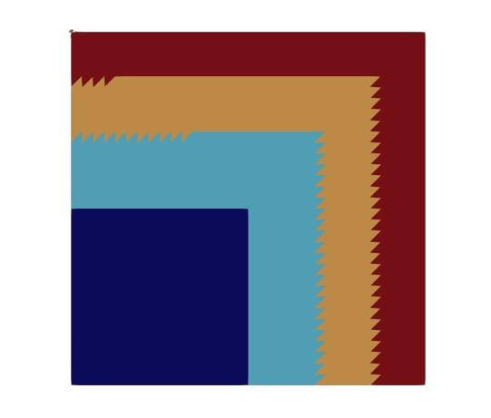
quality=6.52e-2
3. BFS With Restart (BFSWR)
Cette méthode utilise la même logique que celle du BFS, mais lorsque qu’une partition excède le nombre d’éléments par partition voulu, la file d’attente est vidée et le prochain élément racine devient le dernier élément contenu dans la file avant d’être vidée.
Voici un exemple du partitionnement obtenu sur un maillage carré en 2D via la méthode BFS pour n=4 partitions:
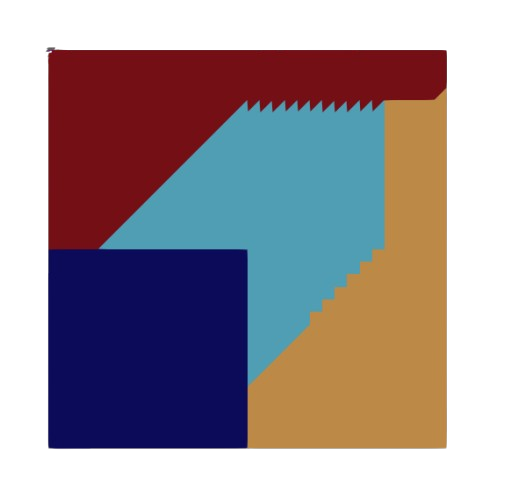
quality=3.32e-2
4. Metis
METIS est une bibliothèque logicielle largement reconnue, conçue pour le partitionnement de graphes. Dans le contexte de l’adaptation de maillage, elle est utilisée pour décomposer un maillage en sous-domaines en le représentant comme un graphe dual, où chaque élément du maillage correspond à un nœud du graphe. La division du maillage est ensuite obtenue en partitionnant ce graphe. METIS propose deux algorithmes principaux avec des objectifs similaires : le partitionnement Kway et le partitionnement Récursif (Recursive Bisection), qui visent tous deux à minimiser les interdépendances entre les partitions pour optimiser l’efficacité du calcul parallèle.
Metis Kway
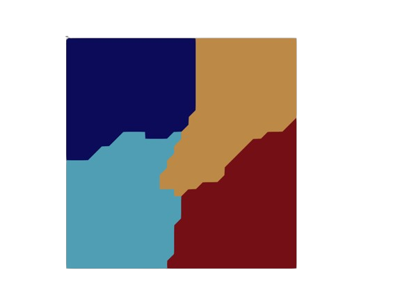
Ajout discussion autour de la qualité des partitions
Metis Recursive
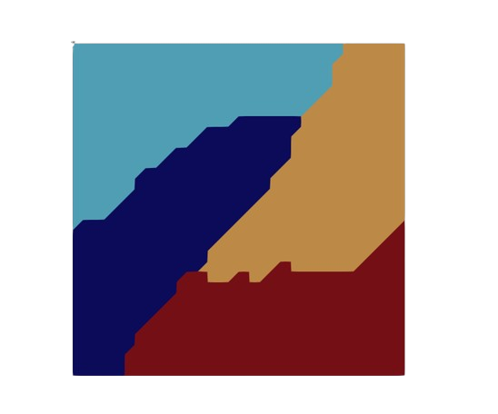
Ajout discussion autour de la qualité des partitions
Load Balancing
Une stratégie efficace de partitonnement devrait également faire en sorte d’équilibrer la charge de calcul entre les différents processeurs. Chaque travail de remaillage étant effectué indépendamment sur les différentes partitions, la performance globale d’une parallélisation de l’algorithme de remaillage sera limitée par la partition ayant la plus grosse charge computationnelle.
Cette charge de travail dépend des opérations de remaillage utilisées (insertion, collapse, swap, smoothing), de la métrique cible \(\mathcal{M}(x)_{x \in \Omega}\), du maillage initial \(\mathcal{H}\) et de sa métrique induite \( (\mathcal{M} _{\mathcal{H}}(x)) _{x \in \Omega} \) avec \(\Omega\) le domaine à remailler.
Remarque :
Si l’on considère que la métrique induite par le maillage initiale est égale en tout point du domaine \(\Omega\) à la métrique cible, i.e \( (\mathcal{M} _{\mathcal{H}}(x)) _{x \in \Omega} = \mathcal{M}_T(x) _{x \in \Omega}\) alors aucun travail de remaillage sera à effectuer.
Pour pouvoir définir le travail global de remaillage à effectuer, on procède à une estimation du travail élément par élément. On utilise toutefois une approche continue puisqu’on le rapelle les différents champs de métrique sont définis en tout point du domaine \(\Omega\).
Définition : Densité & Compléxité
Pour une métrique donnée \(\mathcal{M}(x)_{x \in \Omega}\), la densité en chaque point du domaine \(\Omega\) est déterminée par :
\[ d_{\mathcal{M}}(x) = \sqrt{ det\mathcal{M}(x)} \]
La densité ponctuelle \( d_{\mathcal{M}}(x)\) influence directement le nombre d’éléments requis dans le maillage adapté : une densité plus élévée dans des régions spécifique du maillage entrainera un plus grand nombre d’élement dans ces zones. La compléxité d’un maillage \( \mathcal{N} \), définie comme le dual du nombre total de sommets N dans le maillage, est uen conséquence directe de la distribution de la densité de la métrique sur \(\Omega\).
\[ \mathcal{N} = \int_{x \in \Omega}^{} \sqrt{det \mathcal{M}(x) } \ dx = \int_{x \in \Omega}^{} d_{ \mathcal{M}}(x) \ dx \]
Pour tout élément \(K\) du maillage, il est possible d’y définir la métrique induite et la métrique cible. En effet, la métrique d’un élément n’est autre que la moyenne géométrique des métriques en ses sommets.
\[ \mathcal{M}|_ K = exp( \ \sum_{i=1}^{n} \ \frac{1}{n} \ ln( \ \mathcal{M}(x_i) \ ) \ ) \text{ where } x_i \text{ are the vertices of } K \]
On peut également calculer l’intersection de la métrique cible et de la métrique induite : \[ \mathcal{M}_ { \cap }|_ K= \mathcal{M}_ {\mathcal{H}}|_ K \cap \mathcal{M}_ T |_ K\] On dénotera alors \( d_{T} , d_{\mathcal{H}}, d_{\cap} \) les densités des métriques \( \mathcal{M}_ T|_ K, \mathcal{M} _{\mathcal{H}} | _ K \) et \( \mathcal{M} _ { \cap } | _ K \) respectivement. On analysera le travail dans deux configurations spécifiques et on généralisera à toutes configurations.
Cas d’insertion :
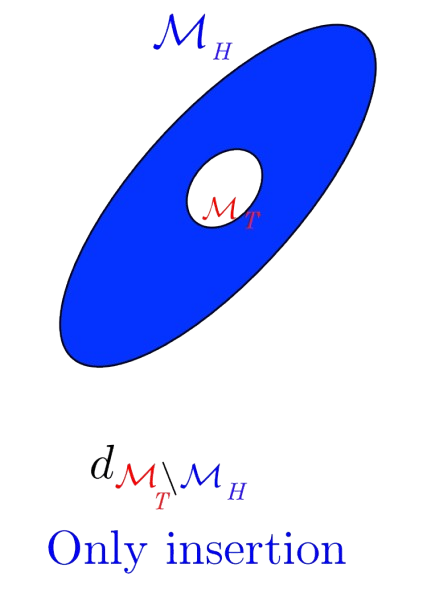
Prennons le cas, ou le maillage sera uniquement raffiné, la densité de points à insérer est \( d_{\mathcal{M}_T \setminus \mathcal{M} _{\mathcal{H}} }\) d’où le travail à effectuer par élément est défini par :
\[ wrk(K) = \alpha |K|(d_{ T} - d_{\mathcal{H}}) = \alpha |K|(d_{\cap} - d_{\mathcal{H}}) \]
Avec :
- \(\alpha\), le coût de l’opérateur d’insertion
- \(|K|\), le volume de l’élément
- \( \mathcal{M} _ { \cap } = \mathcal{M} _ T \) dans ce cas précis
Il est important de garder en tête ici que la densité est inversement proportionnelle à la “taille” de l’ellipse représentant la métrique.
Cas de Collapse :
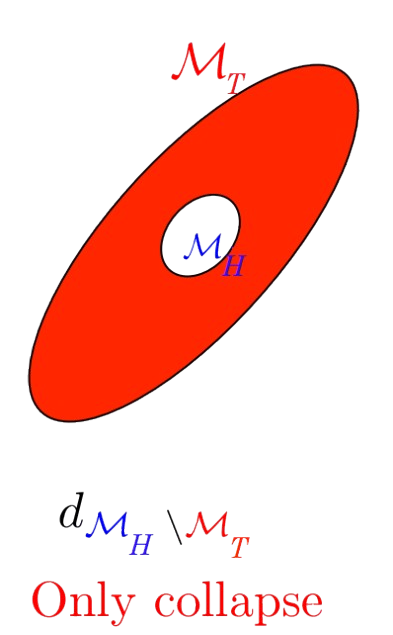
Dans le cas où le maillage est uniquement dégrossi, la densité des points à insérer devient : \( d_{\mathcal{M} _{\mathcal{H}} \setminus \mathcal{M}_T }\)
\[ wrk(K) = \beta |K|(d_{\mathcal{H}} - d_{ T}) = \beta |K|(d_{\cap} - d_{ T}) \]
Avec :
- \(\beta\) le coût de l’opérateur d’insertion
- \(|K|\) le volume de l’élément
- \( \mathcal{M} _ { \cap } = \mathcal{M} _ {\mathcal{H}} \) dans ce cas précis
Cas d’optimisation :
A la fin du processus de remaillage, une phase d’optimisation est appliquée pour améliorer la qualité du maillage. Ainsi le travail d’optimisation effectué est proportionnel à la taille du maillage final :
\[ wrk(K) = \gamma \ |K| \ d_T \]
Avec :
- \(\gamma\) le coût de l’opérateur d’insertion
- \(|K|\) le volume de l’élément
Cas Géneral :
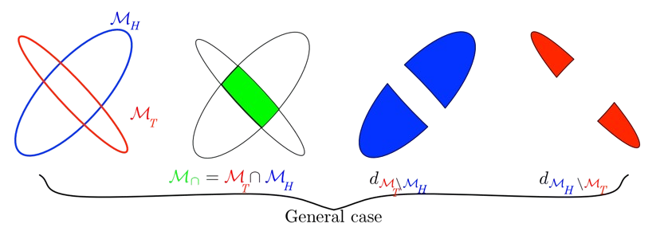
Dans le cas général, il est possible d’avoir à insérer et à supprimmer localement des éléments de maillage pour l’adapatation d’un seul et même élément. Par exemple, si la métrique induite et la métrique cible possèdent la même densité mais des axes orientés dans des directions différentes.
Le cas général englobe toutes les situations et la métrique d’intersection sert de base commune pour l’adapatation. La charge de travail est donc déterminée par la formule suivante :
\[ wrk(K) = |K| \ ( \alpha \ (d_{\cap} - d_{\mathcal{H}}) + \beta \ (d_{\cap} - d_{ T}) \ + \gamma \ \ d_T ) \]
Premiers Résultats et Observations
Après l’implémentation initiale des concepts de partitionnement et d’estimation de charge, les premiers cas tests ont permis de dégager des observations cruciales concernant le comportement des algorithmes et la nature des défis liés à l’équilibrage du temps de calcul des partitions.
Les expérimentations ont été menées à partir d’un maillage test cubique \( \Omega = [0,1]^3\), avec plusieurs paramètres réglables :
Configuration 3D:
- Partitionneur : (MetisRecursive, MetisKway, Hilbert, Hilbert_Ball, BFS, BFSWR)
- \( M_H(x)_{x \ in \ \Omega } \) (taille élément)
- \( M_T(x)_{x \ in \ \Omega} \) (Iso / Aniso)
- Nombre de partitions = Nombre de threads
- Load Balancing : Oui/Non
Pour pouvoir au mieux estimer les coûts en terme d’adaptation de maillage que représente chaque élément, il est nécessaire d’avoir une idée précise de ce que sont les coûts propres à chaque opération. Dans un premier temps, un profilage du code sur plusieurs configurations données permet de mettre en lumière plusieurs constats :
| Opération \ Etat | Réussi | Echouée | Vérification |
|---|---|---|---|
| Split | 10−5 | 10−6 | 10−8 |
| Collapse | 10−5 | 10−5 | 10−8 |
| Swap | 10−5 | 10−6 | 10−6 |
| Smooth | 10−9 | 10−9 | 10−9 |
L’opération de vérification qui prend le plus de temps est celle du swap. Tous les couts liées aux opérations de smoothing peuvent être négligés la formule d’estimation de coût peut alors être simplifiée:
\[ wrk(K) = |K| \ ( \alpha \ (d_{\cap} - d_{\mathcal{H}}) + \beta \ (d_{\cap} - d_{ T}) \ ) \]
Pour pouvoir précisement évaluer le coût d’un split et d’un collapse, il est important de comprendre le fonctionnement réel de ces opérations… Un premier passage de split peut entrainer la formation de collapse et de swaps dans certaines parties du maillage pour différentes raisons. De plus par nature de l’opération de spli, cell-ci entraine la création de nouvelles arêtes qui seront elles mêmes passées dans l’algorithme de remaillage. Les éléments découlant d’un split sont souvent de qualité suffisante et ne devraient pas être sujet à de nouvelles opérations de remaillage mais sont au moins passés pour vérification pour chaque opération.
Il découle que le coût total d’un split peut être déterminé par :
\[ \alpha = \mathcal{C}_{split} + \beta * \rho _{collapse} + \phi * \rho _{swap} + \lambda * \overline{\mathcal{C} _{check}} \]
Avec :
- \(\mathcal{C}_{split}\) le coût unitaire d’un split
- \( \beta \) le coût total d’un collapse
- \( \rho _{collapse} \) la proprotion de collapse engendré par un split
- \( \phi \) le coût total d’un swap
- \( \rho _{swap} \) la proportion de swap engendré par un split
- \( \lambda \) Le nombre d’arêtes supplémentaires générées par un split
- \( \overline{\mathcal{C} _{check}} \) La somme des coûts de chaque vérification d’opération
Dans de futures observations, mais pour simplifier les calculs on montrera que la proportion de swap générés par un split est négligeable. De la même manière on peut définir le coût d’un collapse de la manière suivante :
Ce qui nous amène à : …
Vers un Load Balancing Intelligent
Limites des modèles analytiques
L’approche initiale consistait à définir le travail de remaillage par une formule déterministe basée sur les densités de métriques : $$wrk(K) = |K| ( \alpha (d_{\cap} - d_{\mathcal{H}}) + \beta (d_{\cap} - d_{ T}) + \gamma d_T )$$
Cependant, après implémentation, cette modélisation s’est heurtée à la réalité de l’adaptation anisotrope :
- Dépendance des opérateurs : Le coût d’un split n’est pas une valeur isolée car il engendre souvent des cascades de collapses et de swaps pour maintenir la validité topologique du maillage.
- Sensibilité à l’anisotropie : Une métrique très étirée rend la recherche de cavités et la validation des opérations beaucoup plus complexe, rendant les poids uniformes peu représentatifs de la réalité computationnelle.
- Goulots d’étranglement : Les premiers tests ont montré que les partitions ayant peu de sommets mais une forte activité de remaillage créent des goulots d’étranglement par rapport aux partitions denses mais statiques.
Piste de l’IA (Exploration)
Face à l’impossibilité de trouver un modèle analytique universel fonctionnant pour tout type de métrique, l’intégration d’un modèle d’IA a été envisagée. L’idée était d’entraîner un réseau capable de prédire le coût de calcul à partir de patterns de maillage et de métriques.
- Obstacle majeur : La génération de données d’entraînement représentatives (dépendance au type de maillage, à la qualité de la métrique, etc.) aurait nécessité un investissement temporel trop important, nous éloignant du cœur de la thèse.
La Chaîne de Calcul : Écosystème et Interopérabilité
Le défi de la convergence initiale
L’adaptation est un processus dont la qualité dépend de la solution calculée sur le maillage précédent.
- Sensibilité de l’indicateur : Si la solution sur le maillage initial (souvent grossier) n’est pas convergée, l’indicateur d’erreur est de mauvaise qualité.
- Conséquence directe : Un indicateur bruité ne permet pas d’adapter le maillage correctement pour capturer la physique de l’écoulement (chocs, couches limites).
Adaptation Hybride : Le cycle Polyédrique / Tétraédrique
Pourquoi le polyédrique ?
Tucanos travaille nativement sur des maillages full tétraèdres. Cependant, pour la résolution en Volumes Finis (VF) cell-centered dans CODA, les maillages polyédriques sont préférés pour :
- Une meilleure convergence de la solution sur des maillages grossiers.
- Un calcul de gradient plus robuste (via Green-Gauss ou Moindres Carrés).
Algorithme de la boucle d’adaptation
Le cycle mis en place pour pallier les limitations des tétras est le suivant :
- Initialisation : Départ d’un maillage tétraédrique coarse.
- Conversion : Transformation en polyédrique via le logiciel ANSA (plus stable que la méthode duale interne actuelle).
- Simulation : Calcul de la solution via CODA sur le maillage polyédrique.
- Interpolation (Rayon Pair) : Pour remailler, il faut ramener la solution du Poly vers le Tétra. J’ai implémenté la méthode du “Rayon Pair” (Point-in-Polyhedron) pour déterminer l’appartenance d’un point à une cellule polyédrique.
- Remaillage : Utilisation de Tucanos pour adapter les tétras selon la métrique issue de la solution.
Robustesse et qualité des éléments
Le processus est fragile : les mailles remaillées par Tucanos ne fournissent pas toujours de bons éléments polyédriques après conversion. Un travail est en cours pour identifier des critères de qualité tétraédriques spécifiques garantissant la stabilité de la solution polyédrique après adaptation.
Étude de Cas : Aile ONERA M6
Adaptation à haute complexité
L’adaptation fonctionne de manière satisfaisante lorsqu’un grand nombre de degrés de liberté est autorisé. Sur l’aile M6, un maillage très bien adapté capturant le choc transsonique a été obtenu avec :
- Complexité : Environ 6 000 000 d’éléments.
- Itérations : 20 cycles d’adaptation.
Le défi de la basse complexité
L’enjeu actuel est d’obtenir une capture physique similaire avec une complexité proche du maillage initial (~600 000 éléments).
- Observation : Le couplage actuel échoue à capter la courbure de la Hessienne du Mach sur maillage grossier.
- Analyse : L’indicateur d’erreur, initialement pensé pour le DG (Discontinuous Galerkin), semble moins performant pour le Volume Fini sur des maillages très coarse où le gradient est mal résolu.
Perspectives : Gradients d’ordre supérieur
Pour améliorer la précision de l’indicateur sans augmenter massivement le nombre d’éléments, l’objectif est de travailler sur des méthodes de calcul de gradients d’ordre plus élevé. Cela permettrait d’obtenir un indicateur d’erreur plus précis capable de guider l’adaptation même sur des résolutions spatiales limitées.
Appendix and References
Afin de faciliter la compréhension de cette recherche, cette section fournit des informations complémentaires essentielles ainsi qu’une liste exhaustive des références qui ont été déterminantes pour notre travail.
References
-
George, P. L., Borouchaki, H., Alauzet, F., Laug, P., Loseille, A., & Maréchal, L. (2018). Maillage, modélisation géométrique et simulation numérique Volume 2.
-
Loseille, A., & Alauzet, F. (2011). Continuous Mesh Framework Part I: Well-Posed Continuous Interpolation Error. SIAM Journal on Numerical Analysis, 49(1), 38-60.
-
Loseille, A., & Alauzet, F. (2011). Continuous Mesh Framework Part II: Validations and Applications. SIAM Journal on Numerical Analysis, 49(1), 61-86.
-
Caplan, P. C. (2019). Four-Dimensional Anisotropic Mesh Adaptation for Spacetime Numerical Simulations.
-
Loseille, A., Alauzet, F., & Menier, V. (2017). Unique cavity-based operator and hierarchical domain partitioning for fast parallel generation of anisotropic meshes.